East Asia is a large expanse of territory with China as its largest country. The countries of Mongolia, North and South Korea, and Japan are China’s neighbors. The island of Taiwan, off the eastern coast of China, has an independent government that has been separated from mainland China since shortly after World War II. On the southern coast of China is Hong Kong, a former British possession with one of the best ports in Asia. Under an agreement of autonomy, Hong Kong and its port were turned over to the Chinese government in 1997. Next door, to the west of Hong Kong, is the former Portuguese colony of Macau, which has also been returned to Chinese control. In western China is the autonomous region of Tibet, referred to by its Chinese name, Xizang. Tibet has been controlled by Communist China since 1949, shortly after the People’s Republic of China (PRC) was declared a country. Lobbying attempts by the Dalai Lama and others for Tibetan independence have not been successful. The region of Tibet has recently become more integrated with the country of China because of the immigration of a large number of Chinese people to the Tibetan region.
Figure 10.1 East Asia and Its Neighbors

China is the largest country in East Asia in both physical size and population. Other countries of East Asia include Mongolia, North Korea, South Korea, and Japan. Hong Kong, Macau, and Taiwan are associated with mainland China.
Source: Updated from map courtesy of University of Texas Libraries, http://www.lib.utexas.edu/maps/middle_east_and_asia/asia_east_pol_2004.jpg.
Japan has emerged as the economic dragon of East Asia. Japanese people have a high standard of living, and the country has been an industrial and financial engine for the Pacific RimThe coastal lands bordering the Pacific Ocean.. Up and coming economic tigersQuickly emerging economic centers in Asia that now include South Korea, Taiwan, Hong Kong, and Singapore. like Singapore, Hong Kong, Taiwan, and South Korea have also experienced strong economic growth and are strong competitors in the global economy. Balancing out the advances of the economic tigers and Japan is the extensive labor base of the Chinese people, which has catapulted the Chinese economy to its position as a major player in the global economy. Left behind in the region is North Korea, which has isolated itself behind an authoritarian dictatorship since World War II. A number of countries that were former enemies in World War II are now trading partners (e.g., China and Japan), as economic trade bridges cultural gaps with common goods and services. However, cultural and political differences between these countries remain.
East Asia is home to one-fifth of the human population. The realm’s location on the Pacific Rim provides access for interaction with the global economy. The location of Japan, South Korea, and Taiwan, just off the coast of mainland China, creates an industrial environment that has awakened the human entrepreneurial spirit of the realm. Manufacturing has fueled the high-tech engines of the Pacific Rim economies, which have recently taken advantage of the massive labor pool of the Chinese heartland. Across the Pacific from East Asia are the superpower of the United States and its North American Free Trade Agreement (NAFTA) partners, countries that are both competing against and trading with the East Asian Community (EAC). The Russian realm to the north of East Asia—especially its Pacific port of Vladivostok—continues to actively engage the East Asian nations.
Figure 10.2 Flags of the East Asian Nations and Territories

From left to right, top row: China, South Korea, and North Korea. Second row: Macau, Hong Kong, and Tibet. Third row: Taiwan, Japan, and Mongolia.
Sources: Flags courtesy of the CIA World Factbook, https://www.cia.gov/library/publications/the-world-factbook/docs/flagsoftheworld.html. Tibetan flag courtesy of Reisio, http://commons.wikimedia.org/wiki/File:Flag_of_Tibet.svg.
East Asia is surrounded by a series of mountain ranges in the west, Russia in the north, and Southeast Asia to the south. The Himalayas border Tibet and Nepal; the Karakoram Ranges, Pamirs, and the Tian Shan Mountains shadow Central Asia; and the Altay Mountains are next to Russia. The Himalayan Mountains are among the highest mountain ranges in the world, and Mt. Everest is the planet’s tallest peak. These high ranges create a rain shadow effect, generating the dry arid conditions of type B climates that dominate western China. The desert conditions of western China give rise to a large uninhabitable region in its center. Melting snow from the high elevations feeds many of the streams that transition into the major rivers that flow toward the east.
Created by tectonic plate action, the many mountain ranges are also home to earthquakes and tremors that are devastating to human livelihood. The Indian tectonic plate is still pushing northward into the Eurasian plate, forcing the Himalayan ranges upward. With an average elevation of fifteen thousand feet, the Tibetan Plateau is the largest plateau region of the world. It has high elevations and type H climates. The plateau is sparsely populated and the only places with human habitation are the river valleys. Lhasa is the largest city of the sparsely populated region. Sometimes called “the Roof of the World,” the Tibetan Plateau is a land of superlatives. The small amount of precipitation that occurs often comes in the form of hailstorms mixed with wind. Its landscape is generally rocky and barren.
The vast arid regions of western China extend into the Gobi Desert between Mongolia and China. Colder type D climates dominate the Mongolian steppe and northern China. The eastern coast of the Asian continent is home to islands and peninsulas, which include Taiwan and the countries of Japan and North and South Korea. North Korea’s type D climates are similar to the northern tier of the United States, comparable to North Dakota. Taiwan is farther south, producing a warmer tropical type A climate. The mountainous islands of Japan have been formed as a result of tectonic plates and are prone to earthquakes. Since water moderates temperature, the coastal areas of East Asia have more moderate temperatures than the interior areas do. A type C climate is dominant in Japan, but the north has a colder type D climate. The densely populated fertile river valleys of central and southeastern China are matched by contrasting economic conditions. Rich alluvial soils and moderate temperatures create excellent farmland that provides enormous food production to fuel an ever-growing population.
Most of China’s population lives in its eastern region, called China Proper, with type C climates, fresh water, and good soils. China Proper has dense population clusters that correspond to the areas of type C climate that extend south from Shanghai to Hong Kong. Around the world, most humans have gravitated toward type C climates. These climates have produced fertile agricultural lands that provide an abundance of food for the enormous Chinese population. To the south the temperatures are warmer, with hot and humid summers and dry, warm winters. The climates of China Proper are conducive for human habitation, which has transformed the region into a highly populated human community. The North China Plain at the mouth of the Yellow River (Huang He River) has rich farmland and is the most densely populated region in China.
Northwest of Beijing is Inner Mongolia and the Gobi Desert, a desert that extends into the independent country of Mongolia. Arid type B climates dominate the region all the way to the southern half of Mongolia. The northern half of Mongolia is colder with continental type D climates. In the higher elevations of the highlands in western Mongolia, there is a section of type H highland climates. Its climate and location identify Mongolia as a landlocked country in the northern latitudes with a low level of precipitation. The areas of type D climate that extend north from Beijing through Northeast China at times receive more precipitation than northern Mongolia. Northeast China features China’s great forests and excellent agricultural land. Many of China’s abundant natural mineral resources are found in this area. Balancing mineral extraction with the preservation of agricultural land and timber resources is a perennial issue.
Lying north of the Great Wall and encompassing the autonomous region of Inner Mongolia is the vast Mongolian steppe, which includes broad flat grasslands that extend north into the highlands. North China includes the Yellow River basin as well as the municipalities of Beijing and Tianjin. Areas around parts of the Yellow River are superb agricultural lands, including vast areas of loessExtremely fine silt or soil such as that found in the Yellow River Basin of China. that have been terraced for cultivation. Loess is an extremely fine silt or windblown soil that is yellow in color in this region. Deciduous forests continue to exist in this region, despite aggressive clearcutting for agricultural purposes. The Great Wall of China rests atop hills in this region.
Most of western China is arid, with a type B climate. Western China has large regions like the Takla Makan Desert that are uninhabited and inhospitable because of hot summers and long cold winters exacerbated by the cold winds sweeping down from the north. In a local Uyghur language, the name Takla Makan means “You will go in but you will not go out.” To the far west are the high mountains bordering Central Asia that restrict travel and trade with the rest of the continent. Northwestern China is a mountainous region featuring glaciers, deserts, and basins.
Figure 10.3 China and Its Main Climate Regions
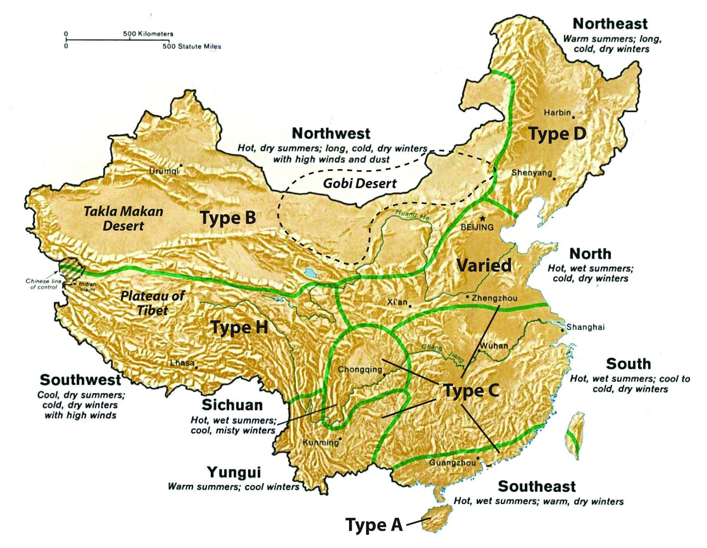Source: Updated from map courtesy of University of Texas Libraries, http://www.lib.utexas.edu/maps/middle_east_and_asia/china_clothing.jpg.
The central portion of China Proper is subtropical. This large region includes the southern portion of the Yangtze River (Chang Jiang River) and the cities of Shanghai and Chongqing. Alluvial processes give this area excellent agricultural land. Its climate is warm and humid in the summers with mild winters; monsoons create well-defined summer rainy seasons. Tropical China lies in the extreme south and includes Hainan Island and the small islands that neighbor it. Annual temperatures are higher here than in the subtropical region and rainfall amounts brought by the summer monsoons are at times very substantial. This area is characterized by low mountains and hills.
There are two major river systems that provide fresh water to the vast agricultural regions of the central part of China Proper. The Yellow River (Huang He River) is named after the light-colored silt that washes into the river. It flows from the Tibetan highlands through the North China Plain into the Yellow Sea. Dams, canals, and irrigation projects along the river provide water for extensive agricultural operations. Crops of wheat, sorghum, corn, and soybeans are common with vegetables, fruit, and tobacco grown in smaller plots. The North China Plain has to grow enough food to feed its one thousand people per square mile average density. This plain does not usually produce a food surplus because of the high demand from the large population of the region. Beijing borders the North China Plain. Its nearest port, Tianjin, continues to expand and grow, creating an economic center of industrial activity that relies on the peripheral regions for food and raw materials. Cotton is an example of a key industrial crop grown here.
The Yangtze River (Chang Jiang River) flows out of the Tibetan Plateau through the Sichuan Province, through the Three Gorges region and its lower basin into the East China Sea. Agricultural production along the river includes extensive rice and wheat farming. Large cities are located on this river, including Wuhan and Chongqing. Nanjing and Shanghai are situated near the delta on the coast. Shanghai is the largest city in China and is a growing metropolis. The Three Gorges Dam of the Yangtze River is the world’s largest dam. It produces a large percentage of the electricity for central China. Oceangoing ships can travel up the Yangtze to Wuhan and, utilizing locks in the Three Gorges Dam, these cargo vessels can travel all the way upriver to Chongqing. The Yangtze River is a valuable and vital transportation corridor for the transport of goods between periphery and core and between the different urban centers of activity. Sichuan is among the top five provinces in China in terms of population and is dependent on the Yangtze River system to provide for its needs and connect it with the rest of China.
Figure 10.4 China and Its Main Population Regions
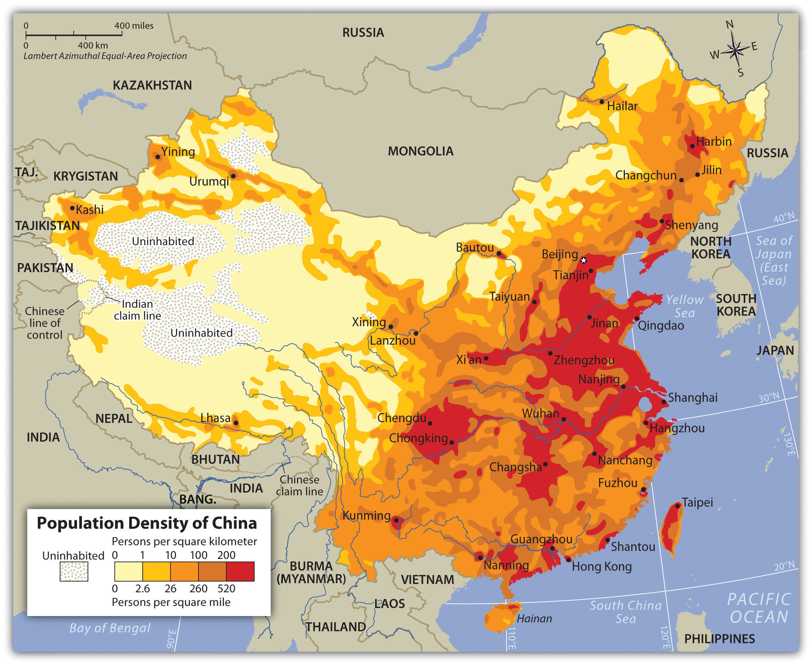The region of eastern China that is favorable to large populations is called China Proper. River basins historically produce abundant food, which in turn leads to concentrated populations.
Northeast China was formerly known as Manchuria, named after the Manchu ethnic group that had dominated the region in Chinese history. Two river basins create a favorable industrial climate for economic activity. The lower Liao River Basin and the Songhua River Basin cut through Northeast China. The cities of Harbin and Shenyang are industrial centers located on these rivers. This region is known as the Northeast China Plain. It has extensive farming activities located next to an industrial landscape of smokestacks, factories, and warehouses. Considerable mineral wealth and iron ore deposits in the region have augmented the industrial activities and have created serious environmental concerns because of excessive air and water pollution. In its zenith in the 1970s, this was China’s main steel production area, but the region is being reduced to a rustbelt since many of China’s manufacturing centers are now being developed in the southern regions of China Proper.
The southernmost region of China Proper is home to the Pearl River Basin, an important agricultural and commercial district. Though smaller in size than the Yangtze River Basin, major global urban centers are located on its estuary, where the mouth of the river flows into the South China Sea. The system includes the Xi River, Pearl River, and their tributaries. As the third-longest river system in China, these rivers process an enormous amount of water, and have the second-highest volume of water flow after the Yangtze. Guangzhou, Macau, and Hong Kong are the largest cities located here, alongside the rapidly expanding industrial center of Shenzhen. As mentioned earlier, Macau was a former Portuguese colony and Hong Kong was a former British colony. These urban areas are now hubs for international trade and global commerce. Guangzhou is one of the largest cities in China, along with Shanghai, Beijing, Wuhan, and Tianjin. Cantonese heritage and traditions form a foundation for the cultural background of the people who live here.
Figure 10.5 Xi-Pearl River System
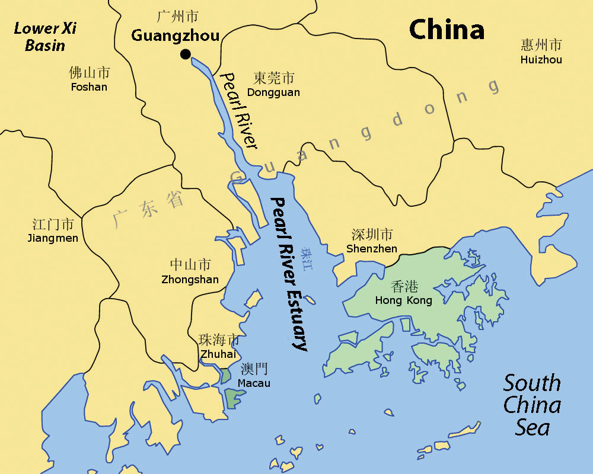An estuary is a wide area at the mouth of a river where it meets the sea. Hong Kong is located on the eastern side of the Pearl River Estuary, and the former Portuguese colony of Macau is located on the western side of the waterway.
Source: Updated from map courtesy of Croquant, http://commons.wikimedia.org/wiki/File:Pearl_River_Delta_Area.png.
The Three Gorges Dam on the Yangtze River is known in China as the New China Dam. Its hydroelectric production system is the largest on Earth. The river system is the world’s third longest, after the Nile and the Amazon. Ideas for this project go back to the days just after the last dynasty fell. Plans and development began in the decades before 1994, when the construction of the dam began. The main purposes of the dam are to control the massive flooding along the Yangtze, produce hydroelectric power, and increase shipping capacity along the river.
Figure 10.6 Three Gorges Dam Region
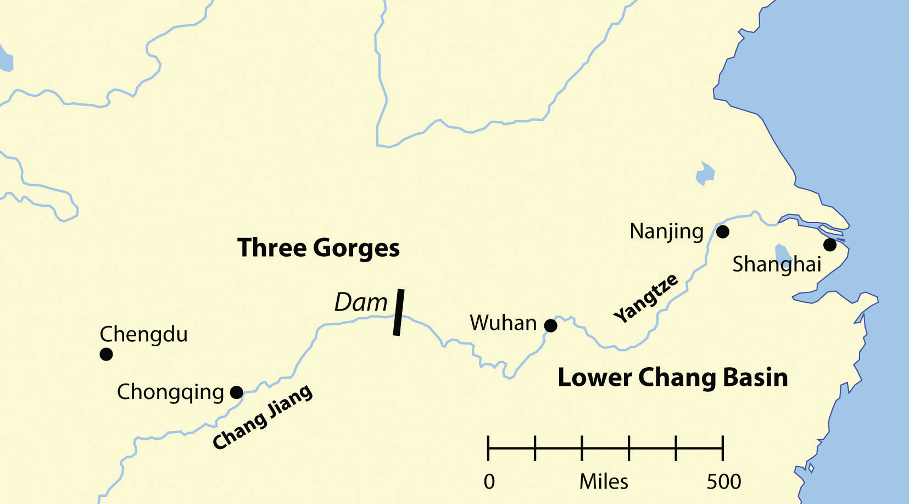The Yangtze River flows through three deep gorges where a dam has been constructed to stabilize flooding, produce electricity, and support river transportation.
Before construction of the dam, flooding along the Yangtze cost thousands of lives and billions of dollars in damage. In 1954, the river flooded, causing the deaths of more than thirty-three thousand people and displacing an additional eighteen million people. The giant city of Wuhan was flooded for three months. In 1998, a similar flood caused billions of dollars in damage, flooded thousands of acres of farmland, resulted in more than 1,526 deaths, and displaced more than 2.3 million people. The dam was rigorously tested in 2009, when a massive flood worked its way through the waterway. The dam was able to withstand the pressure by containing the excess water and controlling the flow downstream. The dam saved many lives and prevented billions of dollars in potential damage. The savings in human lives and in preventing economic damage are projected to outweigh the cost of the dam in only a few decades.
The dam produces most of the electricity for the lower Yangtze Basin, including Shanghai, the largest city in China. Five years of the dam producing electricity has already paid for about one-third of its construction costs, which is equivalent to burning approximately 150 million tons of coal (depending on coal quality). This reduces the emission of millions of tons of carbon dioxide, sulfur, and nitrogen oxides into the atmosphere, which reduces air pollution and does not contribute to climate change. Heavy freight traffic on the Yangtze was the norm even before the dam was built; in fact, it has the highest rates of transport of any river. The building of the dam has augmented the amount of freight traffic.
Figure 10.7
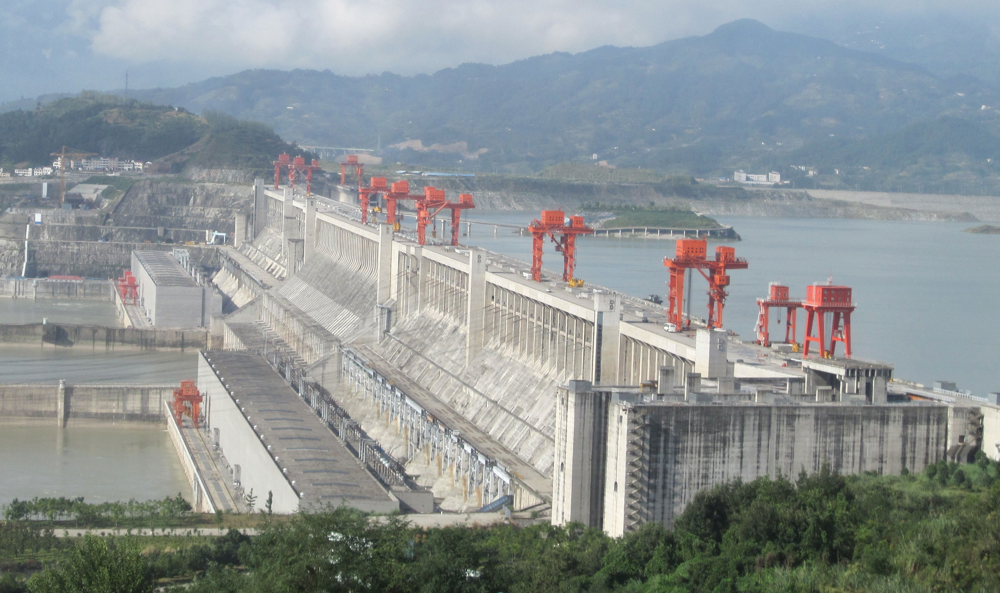China’s Three Gorges Dam on the Yangtze River is the largest dam in the world.
Source: Photo courtesy of Rehman, http://commons.wikimedia.org/wiki/File:ThreeGorgesDam-China2009.jpg.
All the positive attributes of the Three Gorges Dam have contributed to the economic development of China. This is a testimony to the engineering and technological capacity of the nation. However, this project has also created its own problems and negative impacts on culture and the environment. By 2008, the number of people forced to relocate from the flooding of the reservoir had reached 1.24 million. Historic villages and hundreds of archaeological sites were flooded. Thousands of farmers had to be relocated to places with less productive soils. Compensation to the farmers for relocation was forfeited because of corruption and fraud. Sadly, much of the scenic beauty of the river basin is now under water.
Animal species like the critically endangered Siberian Cranes, who had wintered in the former wetlands of the river, had to find habitat elsewhere. The endangered Yangtze River Dolphin has been doomed to extinction because of the dam and the amplified river activity. The dam restricts the flushing of water pollution and creates a massive potential for landslides along its banks, exacerbating the potential for the silting in of the reservoir and the clogging of the dam’s turbines. The dam also sits on a fault zone and there is concern that the massive weight of the water in the reservoir could trigger earthquakes that may destroy the dam, with catastrophic consequences. Large development projects tend to have an enormous impact on the people and the environment that inhabit their shadow. The building of the Three Gorges Dam has created controversy, with strong arguments on both sides of the issues. To further complicate the situation, other large dams are being proposed or are under construction along the same river.
The earliest Chinese dynasty dates to around 2200 BCE. It was located in the rich North China Plain. Organized as a political system, Chinese dynasties created the Chinese state, which provided for a continuous transfer of power, ideas, and culture from one generation to another. From 206 to 220 CE, the Han Dynasty established the Chinese identity; Chinese people became known as People of Han or Han Chinese. The last dynasty, the Qing (Manchu) Dynasty, which ruled between 1644 and 1911, claimed control of a region including all of China, Mongolia, Southeast Asia, and Korea. Dynastic rule ended in China in 1911.
Europeans colonized the Americas, Africa, and South Asia, and it was only a matter of time before technology, larger ships, and the European invasion reached East Asia. European colonialism arrived in China during the Qing Dynasty. China had been an industrialized state for centuries; long before the empires of Rome and Greece were at their peak, China’s industrial cities flourished with the concepts of clean drinking water, transportation, and technology. Paper, gunpowder, and printing were used in China centuries before they arrived in Europe. The Silk RoadLand route from China to Europe through the high mountains of Central Asia., which crossed the often dangerous elevations of the high mountain passes, was the main link between China and Europe.
European colonial powers met tough resistance in China. They were kept at bay for years. Meanwhile, the Industrial Revolution in Europe, which cranked out mass-produced products at a cheap price, provided an advantage over Chinese production. British colonizers also exported opium, an addictive narcotic, from their colonies in South Asia to China to help break down Chinese culture. By importing tons of opium into China, the British were able to instigate social problems. The first Opium Wars of 1839–1842 ended with Britain gaining an upper hand and laying claim to most of central China. Other European powers also sought to gain a foothold in China. Portugal gained the port of Macau. Germany took control of the coastal region of the rich North China Plain. France carved off part of southern China and Southeast Asia. Russia came from the north to lay claim to the northern sections of China. Japan, which was just across the waterfront from China, took control of Korea and the island of Formosa (now called Taiwan). Claims on China increased as colonialism moved in to take control of the Chinese mainland.
Though European powers laid claim to parts of China, they often fought among themselves. China did not produce heavy military weapons as early as the Europeans did and therefore could not fend them off upon their invasion. Chinese culture, which had flourished for four thousand years, quickly eroded through outside intrusion. It was not until about 1900, when a rebellion against foreigners (known as the Boxer Rebellion) was organized by the Chinese people, that the conflict reached recognizable dimensions. The Qing Dynasty dissolved in 1911, which also signified an end to the advancements of European colonialism, even though European colonies remained in China.
European colonialism in China slowed after 1911, and World War I severely weakened European powers. The Japanese colonizers, on the other hand, continued to make advancements. Japan did not have far to travel to resupply troops and support its military. In China, a doctor by the name of Dr. Sun Yat-sen promoted an independent Chinese Republic, free from dynastic rule, Japan, or European colonial influence. Political parties of Nationalists and Communists also worked to establish the republic. Dr. Sun Yat-sen died in 1925. The Nationalists, under the leadership of Chiang Kai-shek, defeated the Communists and established a national government. Foreigners were evicted. The Communists were driven out of politics.
Figure 10.9 Taiwan Currency with Image of Dr. Sun Yat-sen
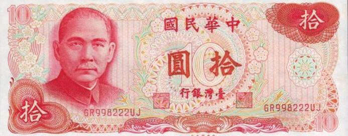Both the Republic of China (ROC) and the People’s Republic of China (PRC) consider Dr. Sun Yat-sen to be a famous Chinese historical figure.
Nationalists, Communists, and Japan conducted a three-way war over the control of China. Japan’s military took control of parts of Northeast China, known as Manchuria, and were making advancements on the eastern coast. Nationalists defeated the Communists for power and were pushing them into the mountains. The Chinese people were in support of the two parties working together to defeat the Japanese. The Long March of 1934 was a six-thousand-mile retreat by the Communists through rural China, pursued by Nationalist forces. The people of the countryside gave aid to the efforts of the Communists. The Chinese were primarily interested in the defeat of Japan, a country that was brutally killing massive numbers of China’s people in their aggressive war.
Figure 10.10 The Three-Way Split of China and the Emergence of Communist China in 1949
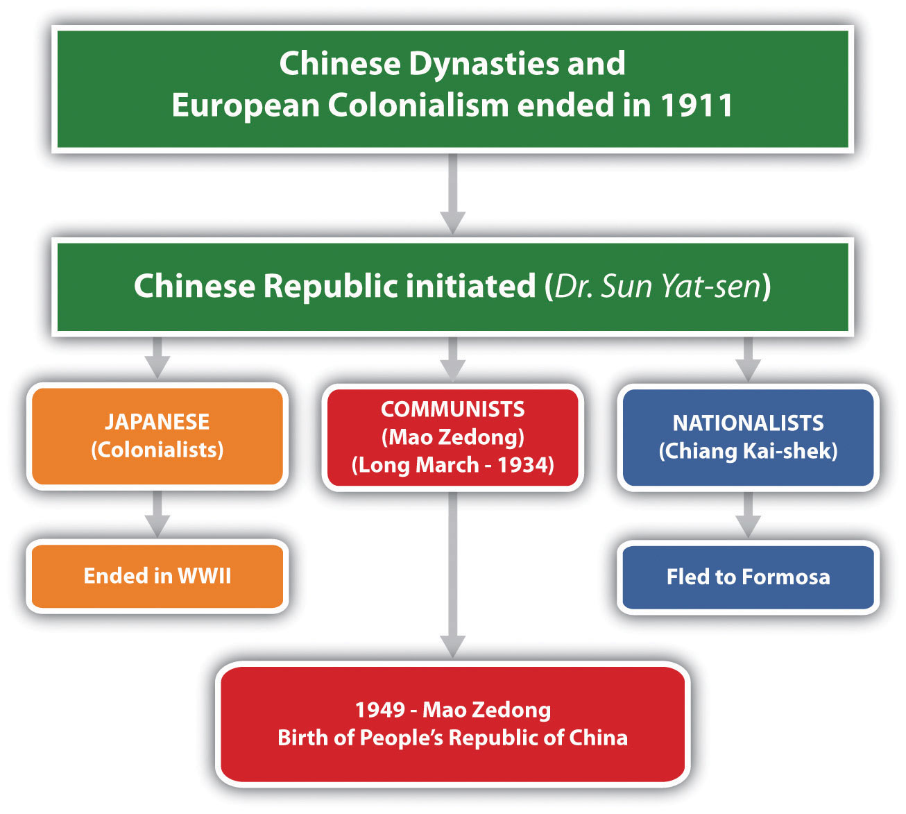In 1945, the defeat of Japan in World War II by the United States changed many things. Japan’s admission of defeat prompted the end of Japanese control of territory in China, Taiwan, Korea, Southeast Asia, and the Pacific. By 1948, the Communists, who were becoming well organized, were defeating the Nationalists. Chiang Kai-shek gathered his people and what Chinese treasures he could and fled by boat to the island of Formosa (Taiwan), which in 1945 had just been freed from Japan. Taiwan was declared the official Republic of China (ROC). The Communists took over the mainland government. In 1949, Communist leader Mao Zedong declared the establishment of the People’s Republic of China (PRC) with its capital in Peking (Beijing). Japan was devastated by US bombing and defeated in World War II; its infrastructure destroyed and its colonies lost, Japan had to begin the long process of rebuilding its country. Korea was finally liberated from the Chinese dynasties and Japanese colonialism but began to experience an internal political division. Political structures in the second half of the twentieth century in East Asia were vastly different from the political structures that had been in place when the century began.
Identify the following key places on a map:
China is the world’s largest Communist country. Isolated from Europeans and Central Asians by the Himalayas and other high mountain ranges, Chinese culture has endured for thousands of years. Rich in history, adventure, and intrigue, a tour through China would reveal a people with a deep, longstanding love of the land, traditions as old as recorded history, and a spirit of commerce and hard work that sustains them to this day. China is about the same land size as the United States, although technically it is slightly smaller than the United States in total area, depending on how land and water areas are calculated. China only has an eastern coast, whereas the United States has both an eastern and a western coast. If you recall the climate types and the relationship between climate and population, you can deduce the location of the heavily populated regions of China.
The form of Communism promoted by Mao Zedong was not the same as the type of Communism practiced in the Soviet Union. Various Communist experiments were forced upon the Chinese people, with disastrous results. For example, in 1958, the Great Leap Forward was announced. In this program, people were divided into communes, and peasant armies were to work the land while citizens were asked to donate their pots and pans to produce scrap metal and increase the country’s industrial output. The goal was to improve production and increase efficiency. The opposite occurred, and millions of Chinese died of starvation during this era.
Another disaster began in 1966 and continued until Mao died in 1976. The Great Proletarian Cultural Revolution wreaked havoc on four thousand years of Chinese traditional culture in a purge of elitism and a drive toward total loyalty to the Communist Party. Armies of indoctrinated students were released into the countryside and the cities to report anyone opposing the party line. Schools were closed, universities were attacked, and intellectuals were killed. Anyone suspected of subversion might be tortured into signing a confession. Violence, anarchy, and economic disaster followed this onslaught of anti-Democratic terror. Estimates vary, but most sources indicate that about thirty million people lost their lives during the Mao Zedong era through purges, starvation, and conflict.
During the early decades of Communism in China, all travel into or out of China was severely restricted by the so-called Bamboo CurtainPolitical policies in China restricting people from entering or leaving the country.. The United States had backed the nationalist movement during the Chinese Civil War and continued to support Chiang Kai-shek in Formosa (Taiwan). The United States did not recognize Communist China; the US embassy was in Taiwan, not in Beijing. As China was experiencing its disastrous experiments with Communism, the core economic areas of the world were advancing with commercial technology and high-tech electronics and sending rockets to the moon. China lagged behind in its industrial activities and became a country based on agriculture. A visit to China by US president Richard Nixon in 1972 signaled the opening of diplomatic relations with the United States and was also viewed as a Cold War move against the Soviet Union.
The Chinese Communist Party’s approach when it took power was to institute a “planned economy.” A planned economy, sometimes called a command economyAn economy in which economic decisions are made by a central authority and not according to market demands., stands in marked contrast to a market economyEconomy based on free market determining supply and demand.. In a planned economy, the government controls all aspects of the economy, including what goods and products should be produced, how much of each should be produced, how products will be sold or distributed and for what (if any) price, who should have jobs and what jobs they should have, how much people will be paid, and all other decisions related to the economy. In a planned economy, businesses are nationalized; that is, businesses are owned by the government rather than by any private entity. By contrast, in a market economy, businesses are privately owned, and most decisions are driven by consumer and investor behavior.
The decade of the 1980s was a transition for China in that there was a shift of focus from China’s Communist economy to a more market-oriented economy. The economic collapse of the Soviet Union in the early 1990s coincided with the opening of China to trade with the West. In 1992, China announced that it would transition to a socialist market economy, a hybrid of a Communist-planned economy and a market economy. A series of statements by China’s political leaders suggested that in order for China to enjoy a more mature form of socialism, greater national wealth was needed. They further indicated that socialism and poverty should not be considered synonymous and that the country was ready to turn its attention to increasing the wealth and quality of life of its citizens. During the next decade, China experienced an enormous growth in its economy. At the beginning of this century, China was ranked in the top five of the world’s largest trading nations, joining ranks with the United States, Germany, Japan, and France. The sheer size of China’s population contributes to the magnitude of its economy. This does not, however, mean that most of China’s population has a high standard of living.
China can be divided into regions utilizing various criteria: political regions, economic regions, natural regions, and climatic regions to name a few. The Communist government of the People’s Republic of China (PRC) is made up of a number of types of political units. The main region of China Proper includes twenty-two provinces, including the island province of Hainan in the south. The island formerly known as Formosa, now called Taiwan, is considered by China to be its twenty-third province but in actuality remains under its own government—the Republic of China (ROC). Mainland China includes five autonomous regions, each with a designated minority group; four municipalities; and two special administrative regions (SARs) that hold considerable autonomy. All but Taiwan are included in the region called mainland China, except the SARs Hong Kong and Macau.
The autonomous regions exist as a kind of a compromise between China and the regions that would prefer to be totally independent and that have large non-Han or ethnic minority populations. These five autonomous regions are Tibet, Guangxi, Xinjiang, Inner Mongolia, and Ningxia. It should be noted that “autonomous” is how China would describe these regions, but that description is arguable. In reality, the autonomous regions have very little legal ability to govern themselves and, in fact, have in some ways less autonomy than the provinces to pass their own legislation.
Four of China’s cities have governance structures that are roughly on par with that of the provinces. The directly controlled municipalities are Beijing, Tianjin, Shanghai, and Chongqing and encompass large geographic areas well beyond the city limits, including towns, villages, and rural areas.
The two SARs of China are Hong Kong and Macau. Hong Kong was part of the British Empire and later a British protectorate until its governance reverted to China in 1997. Known informally under Chinese law as “one country, two systems,” Hong Kong and Macau are guaranteed a great degree of autonomy for at least the first fifty years after the transfer from Britain to China. China is responsible for defense and some portions of foreign affairs, while Hong Kong and Macau are responsible for most other matters of state, including their legal systems, law enforcement, immigration laws, monetary systems, customs policies, and others.
Figure 10.12 China and Its Administrative Divisions, Including Autonomous Regions, Municipalities, and SARs
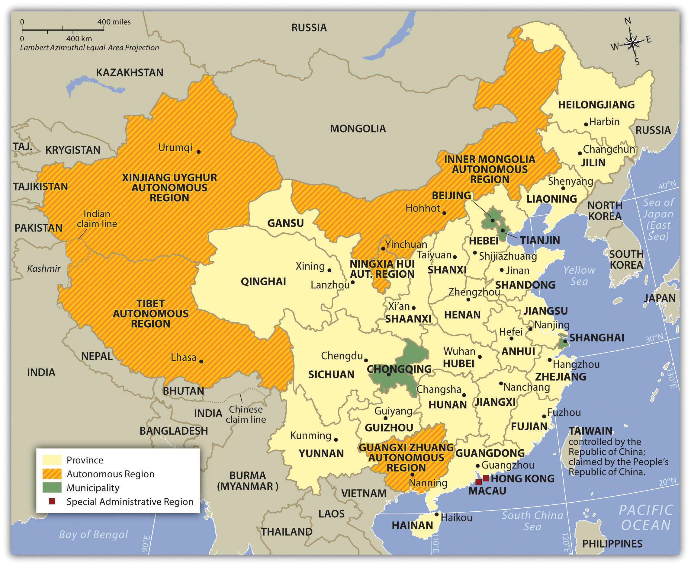China’s Communist government is controlled by the Chinese Communist Party, which is protected and guaranteed power by the country’s constitution. Compared to the more open democratic political systems of Western Europe and North America, China is considered an authoritarian state, complete with heavy restrictions on the Internet, the press, freedom of assembly, reproductive rights, and freedom of religion. Economic trade with the West has created more openness with travel and business, which has begun to challenge or erode the hard-line politics of decades past.
With four thousand years of culture to build on, China continues to press forward into the twenty-first century. In 2010, China had more people than any other country in the world, about 1.33 billion. Most of its people live in China Proper, in the eastern regions of the country. China Proper has the best agricultural lands in the country, the most fertile river basins, and the most moderate climates. For perspective, China has over one billion more people than the United States, with most of those people living in the southeastern portion of China. During Mao’s time, there was little concern for population growth, but in recent decades China has implemented measures to deal with its teeming population.
The government of China has taken the responsibility to address its growing population and the country’s ability to provide for the needs of the additional populace. In 1978, China implemented the one-child-only statute, limiting family size to one child. The policy allows for exemptions under certain conditions. Couples living in rural areas and people of minority status are two examples of exempted conditions and may be permitted more than one child, especially if the first child is a girl. Peripheral administrative regions like Macau and Hong Kong are exempt. The one-child-only policy was implemented in an attempt to address environmental, economic, and social issues related to population growth. This policy has helped reduce China’s potential population by hundreds of millions of people, but the controversial policy has not been easy to implement or make effective. There are growing concerns regarding the policy’s negative impact on society. In response to the one-child-only policy, there have been reports of female infanticide and a higher number of abortions. However, surveys taken by independent agencies indicate that about three-fourths of China’s population supports it.
Economic incentives pressure families to abide by the one-child-only policy. Government benefits and social programs offer incentives that may be lost if couples have more than one child. Enforcement of the policy has been left to the provincial authorities with varying levels of success. Parents eager to have a boy to carry on the family name might abort a female baby. Though now illegal, the use of ultrasound equipment to determine the gender of a fetus is widespread. Some provinces in China have a severe shortage of women because of the policy; men in provinces where women are scarce may have to migrate to find a wife. In China there are more boys born than girls; the ratio averages more than 10 percent more boys than girls, with some provinces reaching more than 25 percent. This imbalance creates cultural issues that may have a negative impact on traditional society. Conventional society is challenged when there are a large number of unmarried young men in an area that may not have adequate employment opportunities for them or available women for potential marriage.
Figure 10.13 Young Girl and Her Grandfather in Southern China
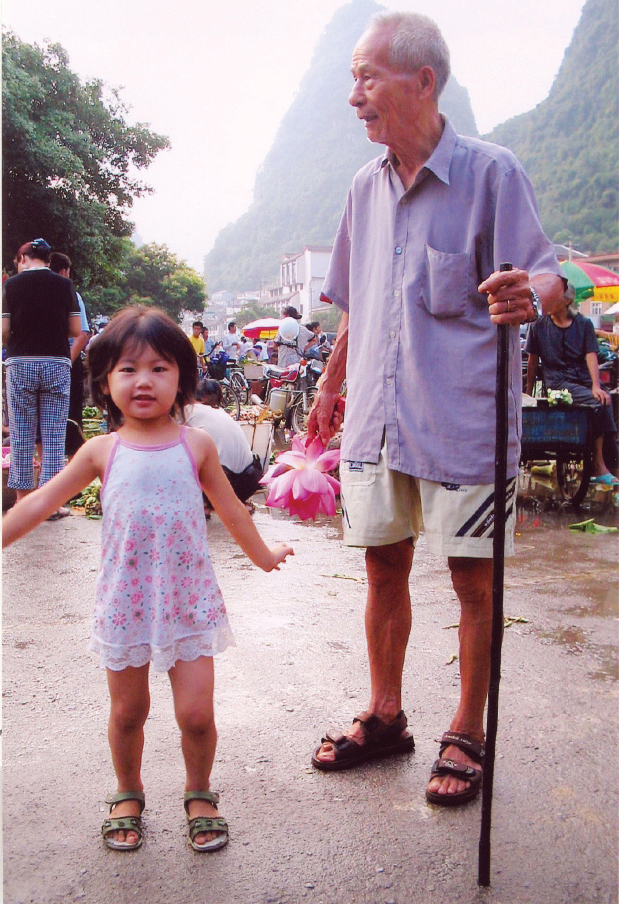The one-child-only policy eliminates brothers, sisters, cousins, aunts, and uncles in an extended family.
Source: Photo used by permission of Joyce Minor.
More than 50 percent of China’s population lives in rural areas, meaning there is potential for high levels of rural-to-urban migration. The core industrial cities located in China Proper attract migrants in a periphery-to-core migration pattern. China hopes that this urbanization and industrial activity will also support their population control methods and fuel the industrial labor base. China’s urbanization increased at an unprecedented rate from 17 percent in 1978 to 47 percent in 2010. This rural-to-urban shift has been one of the largest in human history. It still continues; many workers shift from holding temporary employment in the cities to returning to their families in the countryside between jobs.
Han Chinese is the largest ethnic group in China, with about 90 percent of the country’s population. Some of the largest minority groups include Zhuang (Tai) in the south, Manchu in the northeast, Mongolian in the north central region, Uyghur in Western China, and Tibetan in Tibet, although many other minority groups exist. The main language in China, Mandarin, is spoken in different ways in different parts of the country, particularly in the north and the south. The number of languages in China (over 290) roughly corresponds to the number of ethnic groups in the country. In Western China, where the percentage of Han Chinese is quite low, most of the population is Uyghur, a group that tends to be Muslim. There are also Kazahks, Kyrgyz, and Tajiks from Central Asia, who are also predominantly Muslim. In 2010, the precise number of Muslims in China was not known, but government reports indicated there were about twenty-one million. Other reports indicate there may be three times that many. Minority groups like the Uyghurs have often experienced discrimination by the Chinese government, which has taken measures to marginalize minority groups to keep them in check.
Figure 10.14 China and Its Main Ethnolinguistic Regions
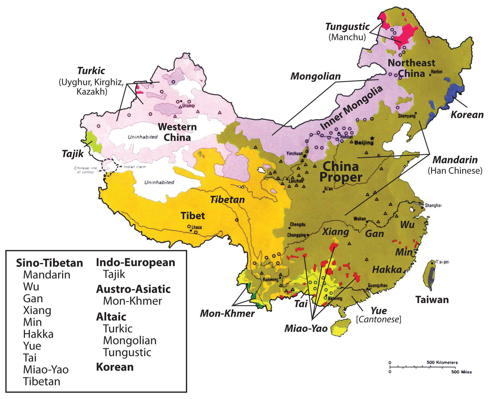Source: Updated from map courtesy of University of Texas Libraries, http://www.lib.utexas.edu/maps/middle_east_and_asia/china_ethnolinguistic_83.jpg.
As a Communist country, there is no official religion in China, nor is any supported by the Chinese government. Before Communism took control, most of the people followed a type of Buddhism. Other belief systems included Taoism and the teachings of Confucius. Christianity does exist in China, but it is illegal to proselytize or recruit converts. Despite that, the Christian population in China has grown rapidly in recent decades. The exact number is unknown, but the CIA World Factbook estimates 3 to 4 percent of the population to be Christian, or somewhere between thirty-nine and fifty-two million adherents. There are many other sects and religious groups in China that have gained attention in recent years. Among these are the followers of Falun Gong, which emerged in the 1990s and has elements of Buddhism and Taoism in its beliefs. The group claims to be more of a science than a religion. The Chinese government believes otherwise and banned the Falun Gong in 1999 after the group staged a large protest against the Communist Party. The crackdown by the government included many arrests and stiff prison sentences. The group is currently banned by the government.
In the past two decades, China has shifted its economy from a closed system with a centrally planned, government-controlled market to one with more open trade and a flexible production structure. These economic reforms have allowed capitalistic tendencies to drive production, have promoted increased involvement in private enterprise, and have increased international investment in the Chinese economy. China has phased out collective farms and has increased agricultural production; the approach to free enterprise and international trade and investment has become more open; and the Chinese economy has grown at a rapid rate. Open trade and interaction with the global community have allowed China to catch up with the rest of the world in terms of information and communication technology, and computer and Internet use in China has opened up many sectors to new opportunities and employment possibilities. China’s policy of creating special economic zones (SEZs)Politically designated area where special economic rules or administrative policies are established to attract or encourage business and trade. has increased urban and economic growth in coastal cities, fueling the strong rural-to-urban shift in the population.
Figure 10.15
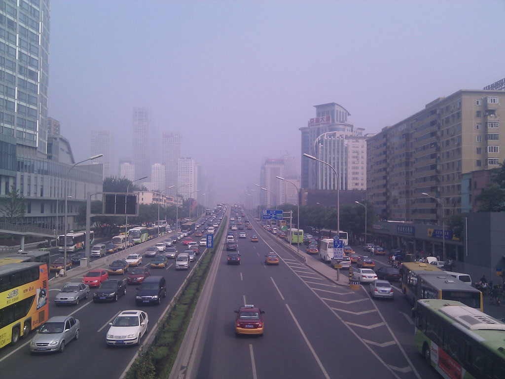Beijing, a metropolitan center of Chinese culture, is the capital of China. Freeway development has expanded in recent years as higher incomes have allowed for automobile purchases. As a result, traffic congestion and air pollution are part of China’s current environment.
Source: Photo courtesy of Jon Phillips, http://www.flickr.com/photos/jonphillips/4998737777.
The fast-paced growth of the Chinese economy in the past decade has brought with it some negative consequences. The exploitation of resources and the heavy utilization of the environment have resulted in serious soil erosion and air pollution. The water table in many parts of China has decreased because of heavy demands on the nation’s water supply. Arable land is being lost to erosion and inadequate land-use practices. Rural areas have not received consideration or resources equal to the coastal cities, so conditions remain poor for most rural people. Half of China’s population earns the equivalent of a few dollars per day, while a fortunate few earn high salaries. Unemployment is at an elevated level for tens of millions of migrants who shift from location to location, looking for work. There is also an unfortunate degree of corruption within the government and state-run offices.
Compared to Western countries, China is an authoritarian state that does not allow labor unions, free speech, freedom of religion, or freedom of the press. There has been more openness in China’s economic reforms and in travel, but other strict rules of the state remain. There is no minimum wage law for factory workers, who work long hours and do not receive benefits or sick leave. There are fewer safety requirements or government regulations for security. China is trying to have the best of both worlds: the efficiency of an authoritarian government and an efficient market-driven capitalist economy. Sustaining the largest standing army in the world, China is geared to become a global superpower. The next great world conflict could be a cultural war between the United States and China that would involve economic, political, and human issues. To work together, the United States and China would be well served to increase their understanding of each other.
During the 1980s, following the death of Mao Zedong, China went through a transition period. The new leader, Deng Xiaoping, realized that in order for China to compete in the world market, its economy would have to be modernized. The challenge was to open up to the outside without the outside placing pressure on the Communist system inside of China. The so-called Bamboo Curtain, which referred to the restriction of movement of goods and people across Chinese borders, diminished. To attract business and tap into the global market economy, China established SEZs along the coast at strategic port cities. SEZs attracted international corporations who wanted to manufacture goods cheaply, while China’s population of 1.3 billion people provided an enormous labor pool and consumer market. China’s modernization efforts paid off in the 1990s, when world trade increased and US trade with China exploded.
By the year 2000, China had profited greatly because of its expanded manufacturing capacity. The coastal cities and the SEZs had become core industrial centers, attracting enormous numbers of migrants—most of them poor agricultural workers—looking for work in the factories. Compared to other jobs, factory jobs are prized employment opportunities. Rural-to-urban shift has kicked in and China’s urban growth is occurring at unprecedented rates. Chinese people are moving to the cities looking for work, just like people in many other areas of the world. The SEZs encourage multinational corporations to move their overseas operations to China and take advantage of the lower labor and production costs. China benefits from the new business opportunities and by the creation of jobs for its citizens. SEZs operate under the objectives of providing tax incentives for foreign companies, exporting market-driven manufactured products, and creating joint partnerships so that everyone benefits. In the past decade, four main cities have been designated as SEZs, along with the entire province of Hainan Island to the south. Many coastal cities were also designated as development areas for industrial expansion.
Figure 10.16
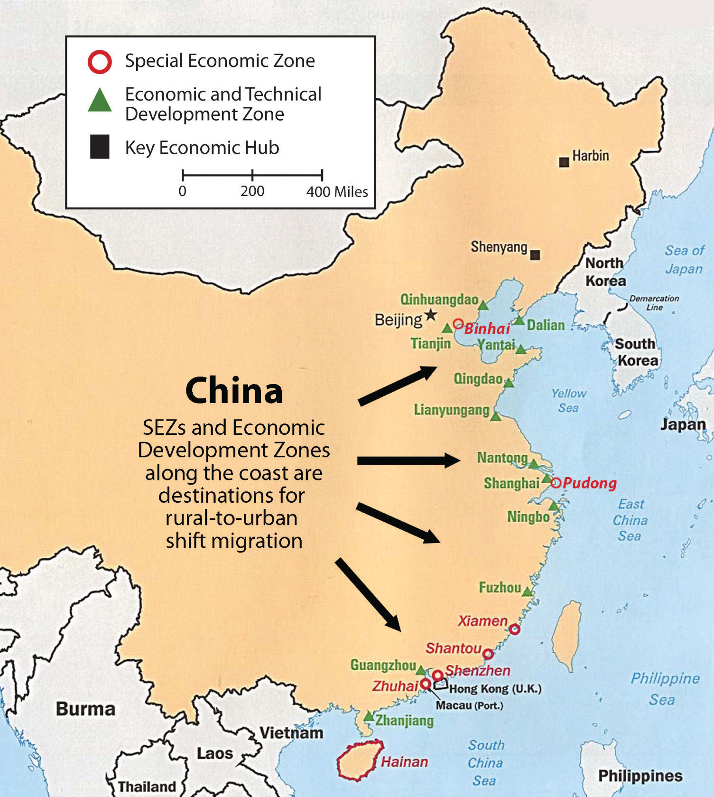Coastal development and SEZs along the coast of China are prompting growth of the rural-to-urban shift.
Source: Updated from map courtesy of University of Texas Libraries, http://www.lib.utexas.edu/maps/middle_east_and_asia/china_econ96.jpg.
In 2006, the president of China called for an expansion of the economy to focus on more innovative activities. The government allowed additional funding for more research in the areas of genetics and gene therapy, computer software development, semiconductors, and alternative energy technologies. China has a high-level energy demand to fuel its expanding economy and provide for a large population, so alternative energy development has been expanding into wind and solar power for both domestic and commercial purposes. China’s industrial sector is advancing to compete in the global marketplace and muscle into the high-tech economy once dominated by core areas of Japan, Western Europe, and the United States.
The political environment of China cannot be separated from its geography. To understand the larger political picture of China’s position in the world, one has to understand China’s geography. In terms of its land area, China is a large country. It includes an immense peripheral region surrounding China Proper consisting of minority populations and buffer states. The core of China is the Han Chinese heartland of China Proper. This is where most of the population lives and where the best agricultural land for food production is located. The surrounding periphery consists of autonomous regions and minority populations, including Tibet, Western China, Inner Mongolia, and Northwestern China. Tibet is a buffer state between China and India; high mountains provide a buffer between India and Tibet. Nepal, Bhutan, and Kashmir are also buffer states between China and South Asia. High mountain ranges extend all along China’s western boundary.
Western China has a majority Muslim population closely aligned with ethnic groups in Central Asia. Inner Mongolia and the independent country of Mongolia create a buffer between China and Russia. China’s actual border with Russia is remote and distant. Northeast China was historically called Manchuria and is home to the Manchus, who are not Han Chinese. Even the isolated sovereign country of North Korea acts as a buffer between China and the world superpower of the United States through its surrogate South Korea. The border with Southeast Asia is mountainous with difficult terrain and very little access. All these buffer regions insulate the Han heartland from the outside. China’s powerbase is actually a territorial island insulated and isolated from the rest of the world. Technology and trade has opened links between the Han Chinese heartland and the global marketplace.
In the scope of geopoliticsThe geography of international relations. (the study of the geography of international relations), the core of China is protected on all fronts except one, the eastern coast. Coastal China is accessible to anyone with a ship. Coastal China is where Japan and the European colonialists such as France, Great Britain, Portugal, and Germany all came to carve up China for their imperial advancements. Also located along the coast is the island of Taiwan with the independent government of the ROC. Taiwan has been on friendly terms with the United States, which has posed a threat to the Chinese mainland. The coast makes China vulnerable. The challenge for China has been to neutralize the coastal threat and reduce its vulnerability. This is where the SEZs make a difference: the Chinese economy has relied on the SEZs to attract foreign corporations to conduct their business with the Chinese in these coastal cities. The economic world has forged ties with the Chinese along China’s coastal waters. The extensive coastal development creates a situation where it is now in everyone’s best interest to make the coastal region of China safe and prosperous.
In the geopolitical sense, China has historically operated under three main premises. The first premise is that China must secure a buffer zone in the periphery, which includes the regions along China’s borders. Second, the country needs to continue to maintain unity within the Han Chinese majority that anchors the core region of China Proper. The third component of China’s geopolitical strategy is to protect and secure its vulnerable coastal region. The country needs to find a way to marginalize outside influence and keep the heartland protected from invaders. These three geopolitical directives were designed before the postindustrial economy emerged with the information age, but the main themes of securing and protecting China remain.
China has additional political issues within the core region of China Proper. To maintain a unified Han Chinese powerbase, there should not be uneven levels of equity in the standards of living within the core region. Manufacturing has rapidly increased in the coastal cities of the SEZs and other development areas. The standard of living in the coastal cities has improved, which has created a disparity between the coastal cities and the rural regions of the interior. Factory workers can earn the equivalent of fifty cents an hour, while their counterparts working in the fields in agriculture are only making the equivalent of a few dollars per day. As a Communist country, this was one of the basic foundational principles within a socialist society—the even distribution of wealth. It kept everyone on the same playing field, at least in theory. The more open capitalist economy is changing this and challenging the equality issue.
China is also economically disproportionately reliant on its ability to maintain a high level of export manufacturing as its method of gaining wealth. The country does not have a type of geography that holds adequate agricultural resources to provide for its vast population. Manufacturing requires good political and economic relationships with the international community. In summary, China’s eastern coast development is a risk that China is forced to take. The risk is a trade-off. On one hand, the eastern coast is the most geopolitically vulnerable side of China, but on the other hand, it is where the most extensive economic gains have been made in recent years. China’s Bamboo Curtain has disappeared; the country is no longer isolated from the rest of the world. Economic development has created a strong degree of dependency on other countries through the doorways of China’s coastal cities. China is becoming dependent on the outside world for oil, raw materials, and technology. Multinational corporations are dependent on China for low-cost manufactured goods. China is becoming more integrated within the network of the global economy.
Identify the following key places on a map:
The heartland of China has always been part of China Proper. Surrounding China Proper are a number of autonomous regions, associated territories, and independent countries. These peripheral areas buffer China Proper from the rest of the world. They also provide China with either access to trade relationships or access to raw materials needed for development. Each peripheral political unit has its own unique physical and cultural characteristics and, in many cases, a minority population that is other than Han Chinese.
Hong Kong is a former British colony and includes a number of islands on the southern coast of China. Hong Kong includes an excellent port, Victoria—one of the best in Asia. Victoria’s deepwater port is on the interior side of Hong Kong Island and is protected from the sea, allowing ship access to an extensive sheltered harbor area. To the north of Hong Kong Island is a peninsula called New Territories, which the British agreed to lease from China in 1897 for a period of ninety-nine years. Bordering the New Territories on the mainland is the rapidly growing industrial city of Shenzhen.
Hong Kong was a major entry point into China for Britain during the colonial era. The colony was a British outpost that created a doorway for British expansion into China. The port allowed for an early trade relationship to become established. The trade relationship was broken during the Korean War in the 1950s. Britain and China found themselves on opposite sides of the war. China was a newly created Communist country and sided with North Korea; Great Britain was a capitalist country and sided with South Korea. The boundary between the busy port of Hong Kong and China was closed. This left Hong Kong with a world-class port but no access to its main markets in China. Instead of closing the port and shutting down shipping, the business community of Hong Kong took advantage of its unique situation and first-rate port to create a world trade center. Ships would import raw materials, which would be processed or manufactured into finished products. The products would then be shipped back out at a profit.
Figure 10.17 The Special Administrative Region (SAR) of Hong Kong, with Shenzhen across the Border from the New Territories
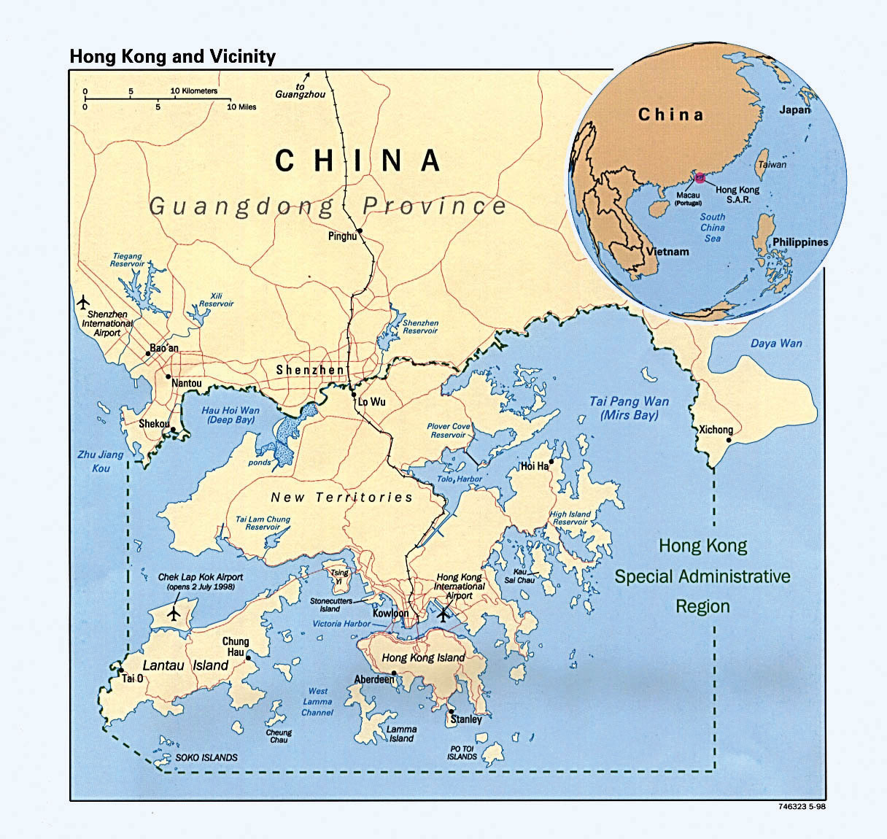Source: Map courtesy of University of Texas Libraries, http://www.lib.utexas.edu/maps/middle_east_and_asia/hong_kong_pol98.jpg.
From the theory of how countries gain wealth, recall that manufacturing was traditionally the method with the highest value-added profits. Hong Kong is a good example of this in action; that is, manufacturing was a successful method of gaining wealth for Hong Kong. First, low-level goods such as clothing and textiles were produced with Hong Kong’s cheap labor and low costs. As business increased, higher-level technical goods were produced, such as radios and other electronic products. Incomes increased. Soon, Hong Kong was a business and banking center trading with all global markets. International trade attracted a strong financial network that enhanced the free market system in Hong Kong. Business in Hong Kong attracted attention in Beijing. Chinese leader Deng Xiaoping, who had begun China’s open door policy in the 1980s, viewed Hong Kong as a major access point to establish trade and commerce with. In the 1990s, the special economic zone of Shenzhen became an important development area for Chinese industries and multinational corporations. China once again used Hong Kong as a major trade corridor so that about one-fourth of all the country’s imports and exports were being shipped through the port of Hong Kong.
During the 1990s, as China actively invested in its industrial sector, it sought ways to attract the business generated by Taiwan and Hong Kong, two economic tigers. Opportunity came knocking in 1997 when the ninety-nine-year lease of the New Territories to Britain expired. China did not want to renew the lease. A deal covering all of Hong Kong was struck between China and Great Britain. Britain would relinquish all its claims to Victoria, the port, and all of Hong Kong if China would allow the area to remain non-Communist and under its own autonomy for fifty years. China agreed, and Britain left Hong Kong in 1997. Hong Kong became associated with mainland China as a special autonomous region, but remained capitalist and democratic in its operations. This opened the door for Taiwan and other trading partners to increase trade with China through Hong Kong. Shenzhen, a special economic zone (SEZ) across the border from Hong Kong in China, was ready to capitalize on its accessibility to the port and the enormous trade that had been established by Hong Kong. Shenzhen became one of the fastest growing cities in the world and has become a center of manufacturing and trade for the global economy. It grew from a moderately sized city of about three hundred fifty thousand in the early 1980s to a city of ten and half million by 2010, and is still growing. One of Shenzhen’s largest trading partners is the Walmart Corporation, as factories in the city produce goods for export to the United States and sale in Walmarts around the country. Shenzhen has established a port of its own and is a magnet for international trade.
More than 95 percent of the seven million people living in Hong Kong are ethnically Chinese. The people have strong ties to mainland China but highly value their separate and independent economic and political status. Hong Kong is a major financial and banking center for Asia and has been working with the Chinese government to provide private banking services for Chinese citizens. The small land size of Hong Kong makes it a high-priced real estate destination. The cost of living is high, and space is at a premium and expensive. Nevertheless, Hong Kong attracts millions of visitors per year and has established itself as a tourism hub for people desiring to visit southern China. Tens of millions of tourists each year use Hong Kong as a base or stopover point to enter China’s southern provinces. Hong Kong offers visitors immense shopping possibilities in a safe and modern environment that is attractive to people from all over the world. Cantonese is the official language, but English is widely spoken in Hong Kong because of Britain’s influence and because of world trade relationships.
Across the Pearl River Estuary to the west is the former Portuguese colony of Macau. The arrangement between China and the British government over Hong Kong provided a pattern that was also applied to Macau. At the end of 1999, Portugal relinquished its claim to Macau and the colony was turned over to the Chinese government under an agreement similar to the agreement between Britain and China regarding Hong Kong. Macau was enabled to retain its autonomy and free-market economy for fifty years as it becomes a special administrative region (SAR) of China. Macau is a much smaller territory than Hong Kong, and home to only about half a million residents.
Taiwan is separated from the Chinese mainland by the Taiwan Strait. In 2010, the population of the island, which is about the size of the US state of Maryland, was twenty-two million. The island is mountainous and has rugged national parks in its interior, while most of the people in Taiwan live in bustling cities along the coast. Taiwan’s push for good education and technical skills for its citizens has paid off in the form of high incomes and an industrialized economy. After World War II, when China raised its Bamboo Curtain, the United States cut its trade relations with the Communist mainland. However, the United States did trade a great deal with the Nationalists in Taiwan. The deep tensions that exist between China and Taiwan are easy to understand given the history that led to Taiwan’s current existence. One of the flash points in China-Taiwan relations has been the “One China” policy. Originally asserted by Beijing, the principle contends that there is only one indivisible China, which encompasses all of China, including Taiwan, Hong Kong, Macau, and Tibet.
During the Cold War, the sizeable population of mainland China was attractive to US corporations that sought trade with China. In 1972, for the benefit of the United States and to counter the influence of the Soviet Union, US president Richard Nixon organized a visit to Beijing that opened the door to US-China diplomatic relations. There were conditions placed on the open door agreement that followed. One condition that mainland China imposed was for the US government to recognize the Communist government in Beijing as the official China. To do this, the United States had to move their US embassy from Taipei, the capital city of Taiwan, to Beijing and recognize only the Beijing government as the official China. The United States agreed to this policy. As a result, no government official in the US State Department, cabinet level or higher, can officially visit Taiwan; at the same time, no equal-level diplomat from Taiwan can officially visit the United States. This policy placed Taiwan in an ambiguous position: Is Taiwan an independent country or is it a part of mainland China?
Mainland China has always demanded that in order for countries to have good relations with the People’s Republic of China (PRC), they must not recognize Taiwan (Republic of China, or ROC). This has caused intermittent problems for the United States and other countries. The termination of diplomatic relations between the United States and the ROC was a huge blow for Taiwan, even though the United States continued to conduct trade with the island. The United States has always supported Taiwan’s economic independence. In 2007, the United States sold military arms to Taiwan. As a result, China began to deny routine access to its ports for US ships. Taiwan’s status on the world stage has fluctuated. For about twenty years after the Nationalists set up a government in Taiwan, the ROC held a seat in the United Nations (UN), and the UN recognized Taiwan’s claim as the legitimate government of China. In 1971, the UN changed its position and gave the seat to Beijing. The UN indicated it could not give a seat to Taiwan because Taiwan is not recognized as a legal nation.
Figure 10.19
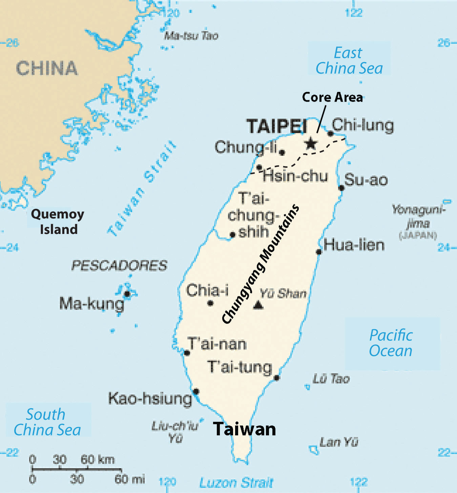Taiwan (ROC) is located just across the Taiwan Strait from Mainland China (PRC).
Source: Updated from map courtesy of CIA World Factbook.
In 2000, Taiwan renewed its efforts to be internationally recognized as a sovereign nation and announced tentative plans to formally secede from China. China responded with many threats and conducted military exercises across the strait from Taiwan. The military exercises were seen as another threat, essentially a show of military might, meant to intimidate Taiwan into retreating from its secessionist position. The United States supported Taiwan by parking a naval fleet nearby, which incensed the mainland government. In 2005, China passed a law authorizing the use of military force to stop any secessionist actions by Taiwan.
Taiwan’s economy continues to use its skilled labor base. In years past, Taiwan’s factories produced textiles and light clothing. As incomes and skills advanced, production shifted to electronics and high-end goods, which it has since been exporting around the world. Taiwan has achieved a high standard of living for its people. When trade opened up through Hong Kong with mainland China, many Taiwanese industries shifted production to the SEZs along China’s coast. Labor in SEZs is less expensive, leading to a corresponding rise in profits. Unfortunately, this has resulted in higher unemployment levels in Taiwan.
Figure 10.20 Street in Taiwan, ROC, Illustrating Modern Businesses and Use of Scooters for Transportation
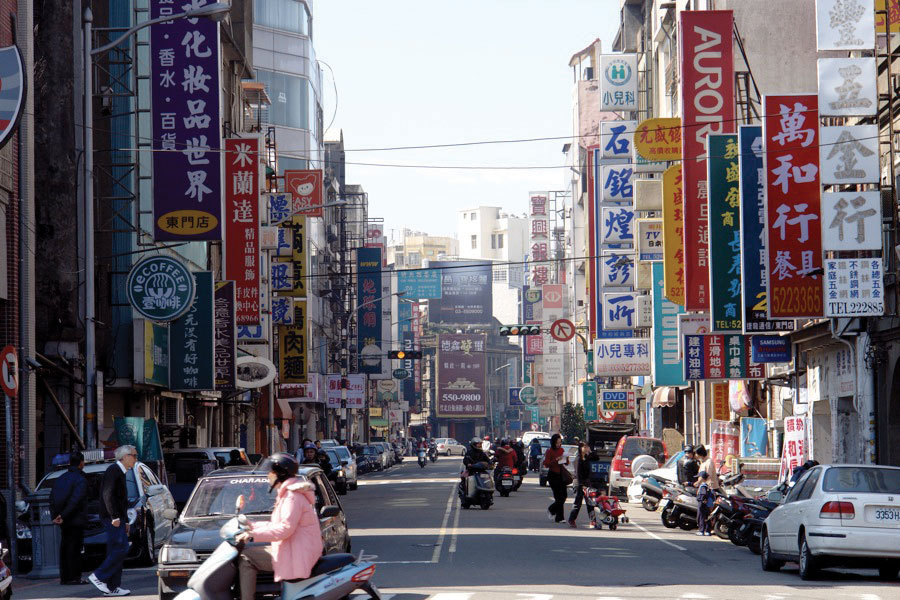Source: Photo courtesy of J Aaron Farr, http://www.flickr.com/photos/jaaronfarr/383526911.
In the past few years, Taiwan’s focus has turned from secession to trade. In 2008, Taiwan elected a government that, though nationalist in its ideology, is committed to strengthening trade and investment with China. Taiwan entered the World Trade Organization (WTO) in 2001 using the name Chinese TaipeiTitle allowed by the Chinese government for the designation of Taiwan.. That move started a cascade of actions that improved “cross-strait” trading conditions, and within just a few years, direct trade between China and Taiwan has become extensive. The question of Taiwan’s political status is as yet unresolved and is clearly still volatile, but trade and investment between China and Taiwan are robust and growing. Taiwan has been able to independently compete in world-class sporting events, including the Olympics, under the name Chinese Taipei.
Located in mountainous southwestern China, Tibet is classified as one of China’s autonomous regions, a disputed political arrangement. It is debatable whether Tibet or any of the other Chinese regions are actually autonomous. The legal structures actually allow for very little self-governance, and most new initiatives require approval from the Chinese central government. Tibet had been an independent entity through much of its history and governed itself as a Buddhist theocracy. Its theocratic political system established the Dalai Lama as both the head of state and the religious leader of the Tibetan people.
Tibet has had a complicated history with China. This is as true of its early history as it is today. In its early history, Tibet was an independent kingdom with its unique type of Buddhism as its state religion. It was during this era that a system of Lamaism, a hierarchy of monks or other religious leaders, took hold. China’s influence in Tibet waxed and waned during the later years of the kingdom, in the tenth century. The Mongols subsumed Tibet into their empire during the first part of their conquests in the thirteenth century. However, in the fifteenth century, the Mongols gave considerable local authority to the Dalai Lama, making him the spiritual leader as well a powerful political figure.
Tibet came under the control of China during the Qing Dynasty. When imperialist rule ended in China in 1911, Tibet began to once again assert its independence. Chinese, British, and Tibetan officials met and came up with an agreement that partitioned Tibet into Inner Tibet, which would be controlled by China, and Outer Tibet, which would be independent. China later indicated its intention to control all of Tibet, a move greatly resented by the Tibetan people.
When Communists took control of China in 1949, the Dalai Lama was originally allowed control over domestic affairs while China would control all other governmental functions. The Chinese government then took steps to greatly reduce the powers of the Dalai Lama and the Panchen Lama (spiritual leader). With the intention of spreading Communism to Tibet, China destroyed monasteries, religious symbols and icons, and other long-practiced ways of life were threatened. The Tibetans considered the Chinese political dominance a cruel and invading force. Monasteries were burned, monks were beaten or imprisoned, and Buddhism was brutally suppressed.
Figure 10.21
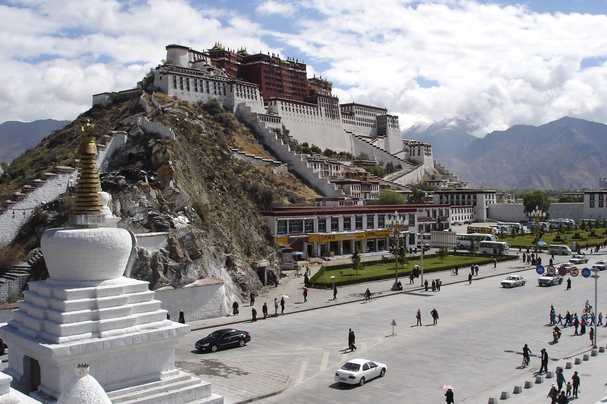Potala Palace in Lhasa, Tibet, rests at 12,100 feet above sea level. This is the former seat of government of the Dalai Lama in Tibet and is a UNESCO World Heritage Site.
Source: Photo courtesy of Ondřej Žváček, http://commons.wikimedia.org/wiki/File:Potala.jpg.
Tibetans revolted in 1956. Backed by the United States, the revolt continued even as China indicated it would suspend the transformation of Tibet. China brutally crushed the revolt in 1959, leaving tens of thousands of Tibetans dead or imprisoned. The Dalai Lama and thousands of Tibetans fled to Dharamsala, India, where they established a government in exile. At this point, China had a firm grip on Tibet, and in 1965 the reorganization of Tibet into a Chinese socialist region began in full force.
During the 1980s and early 1990s, China expressed some willingness to relent in its authoritarian control of Tibet. However, they demanded that the Dalai Lama renounce claims of Tibetan independence, which he refused. Demonstrations and continued violence occurred throughout this period. Chinese-Tibetan relations were further damaged when the Panchen Lama died mysteriously shortly after criticizing socialist reform in Tibet. The Panchen Lama is the next-highest Buddhist official under the Dalai Lama. There is now a controversy with the Chinese government over the selection of the eleventh Panchen Lama. China and Tibet both claimed the authority over choosing the Panchen Lama and each named a different person to take on the role. The situation illustrates the conflict over the minds and the people of Tibet.
The Dalai Lama is the spiritual and political leader of all Tibetans. The Dalai Lama is thought to be the current incarnation of past Buddhist Masters, or Tulkus. The Masters have grown behind the cycle of death and rebirth and choose their own time of rebirth to help educate humanity in how to live. As indicated, the Dalai Lama was always considered the head of state for the government of Tibet and its capital was located in Lhasa. Tenzin Gyatso is the rebirth of the thirteenth Dalai Lama. When he was fifteen years old, on November 17, 1950, he became Tibet’s fourteenth Dalai Lama. This occurred only one month after China’s invasion of Tibet. The Dalai Lama originally, under military pressure from China, ratified the 1951 Seventeen Point agreement. In 1959, he left Tibet and went into exile in India. China has crushed any attempt of Tibetan resistance. While in India, the Dalai Lama has established the Tibetan government in exile and is attempting to preserve Tibetan culture among the thousands of refugees that have accompanied him.
Figure 10.22 The Fourteenth Dalai Lama and Tibetan Leader in Exile
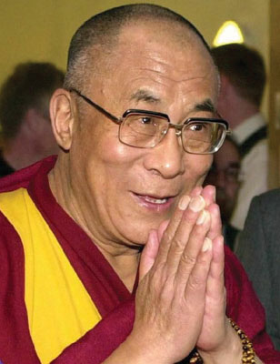Source: Photo courtesy of Marco Bonavoglia, http://commons.wikimedia.org/wiki/File:Tenzin_Gyatzo_foto_1.jpg.
In 2008, a peaceful protest led by Buddhist monks turned violent. Chinese authorities responded with a harsh crackdown. The world’s attention was focused on China at the time because the Olympic Games were under way in Beijing. China has often been a target for protests because of its human rights violations against Tibetans and other minority groups. Little attention was drawn to Tibet during the 2008 Olympic Games. China wanted to showcase its advancements in industrial development and culture and did not want the world to focus on the issues with Tibet or any other part of China.
The population of Tibet is only about three million. They mainly live in the mountain valleys, below seven thousand feet. Lhasa is Tibet’s main urban center as well as its capital. In the past couple of decades, China has softened its treatment of Tibetans and restored some of the monasteries. China has also moved thousands of ethnically Chinese people into Tibet to shift the ethnic balance of the population. A major rail line now directly connects Beijing with Lhasa, Tibet. Lhasa will soon have a majority Chinese population with cultural similarities that reflect more the attributes of China Proper than Tibet. The Tibetans who live there are being compromised simply by population dilution.
Figure 10.23
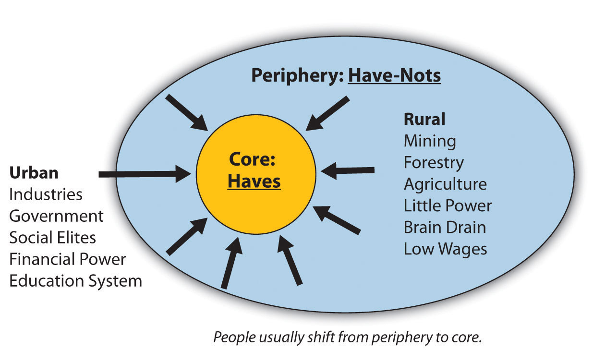The core-peripheral spatial relationship can be appropriately applied to Tibet and its relationship with China. Tibet is a peripheral region with raw materials that provide benefits to the core areas of China, which require the raw materials for industrial development.
As indicated previously, China wants to maintain the mountainous, rural region—with little inhabitable land area and very few people—as a buffer state between India and the Han Chinese heartland of China Proper. Tibet is also becoming more important to the government of Beijing and the business people in Shenzhen and Shanghai. To understand why this is, consider the core-peripheral spatial relationship. What do the core and the periphery usually have to offer each other? Consider also how countries gain wealth. Tibet can play an important role in the larger picture of the Chinese economy. The mountains of Tibet potentially hold vast amounts of natural resources that could support the growing industrial economy in China, which is based on manufacturing goods for the global export markets. China will continue to see to it that Tibet becomes economically integrated with the rest of China in spite of the cultural differences that may exist.
Mongolia ranks as the world’s nineteenth-largest country in terms of square miles. Mongolia shares a similar geography with much of Kazakhstan, which is the world’s largest landlocked nation; Mongolia is second-largest. Despite Mongolia’s large land area (slightly smaller than the US state of Alaska or the country of Iran), its population is only about three million, and the country is the least densely populated country in the world. Mountains, high plains, and grass-covered steppe cover much of Mongolia, a country that receives only between four and ten inches of rain per year, precipitation that usually comes in the form of snow. The Gobi Desert to the south, extending from southern Mongolia into northern China, receives even less precipitation. Inner Mongolia is a sparsely inhabited autonomous region south of Mongolia that is governed by the Chinese government.
Mongolia’s modern capital city of Ulan Bator is home to about one-third of the people of Mongolia; it has the coldest average temperature of any world capital. Mongolia’s history includes the great Mongol Empire of Genghis Khan, which was established in the thirteenth century. The Soviet Union used Mongolia as a buffer state with China. Mongolia’s Communist party dominated politics until the Soviet Union collapsed in the 1990s. The current government in Ulan Bator has to contend with Mongolia’s position between the two large economies of Russia and China.
Tibetan Buddhism is the dominant religion in Mongolia and is practiced by about 50 percent of the population. The Communist influence is evident in that approximately 40 percent of the population considers itself nonreligious. Most of the people are of Mongol ethnicity. Today, about 30 percent of the people are still seminomadic and migrate seasonally to accommodate good grazing for their livestock. A round yurtA traditional, round, tent-like dwelling of nomadic people of Mongolia that can be disassembled and moved as the people migrate with their herds of livestock to new grazing areas., which can be constructed at whatever location is selected for the season and disassembled for mobility, is the traditional dwelling. Mongolian culture and heritage revolve around a rural agrarian culture with an extensive reliance on the horse. Archery, wrestling, and equestrian events are some of the most popular sporting activities.
Figure 10.24 Men Wrestling on the Rugged Grasslands of Mongolia
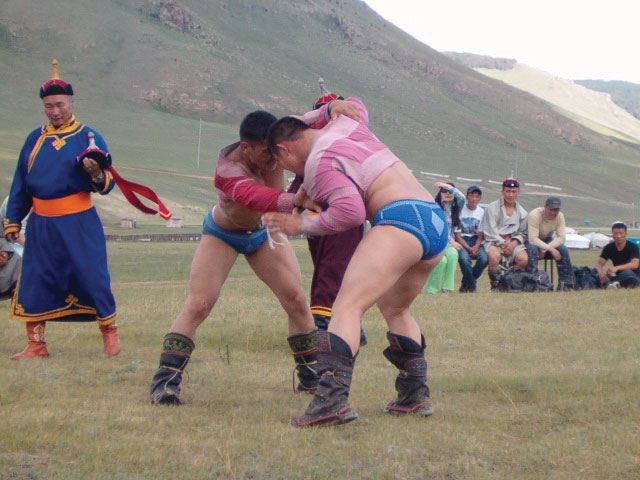Wrestling is a major sport of the country.
Source: Photo courtesy of hu:Burumbátor, http://commons.wikimedia.org/wiki/File:Mongolian_warriors.jpg.
Mongolia’s economy has traditionally been centered on agriculture, but mining has grown in recent years to be a major economic sector. Mongolia has rich mineral resources of coal, molybdenum, copper, gold, tin, and tungsten. Being landlocked cuts Mongolia off from the global economy, but the large amounts of mineral reserves are in demand by core industrial areas for manufacturing and should boost the poor economic conditions that dominate Mongolia’s economy. China has increased its business presence in Mongolia and has been drawing Mongolia’s attention away from its former Soviet ally to become a major trading partner.
Identify the following key places on a map:
Japan consists of islands that lie along the Pacific Rim east of China and across the Sea of Japan from the Korean Peninsula. Most of the archipelago, which has more than three thousand islands, is just north of 30° latitude. Four islands make up most of the country: Shikoku, Kyushu, Hokkaido, and Honshu. The islands have tall mountains originating from volcanic activity. Many of the volcanoes are active, including the famous Mount Fuji. The physical area of all Japan’s islands is equivalent to about the size of the US state of Montana. The mountainous islands of Japan extend into two climate zones. All but the northern region of Japan has a type C climate. The island of Hokkaido in northern Japan has a type D climate and receives enough snow for downhill skiing. Japan hosted the Winter Olympics in 1998. Mt. Fuji, located just west of Tokyo, is a widely photographed mountain because of its symmetrical volcanic cone.
Figure 10.25 Japan’s Four Main Islands and Its Core Urban and Industrial Areas
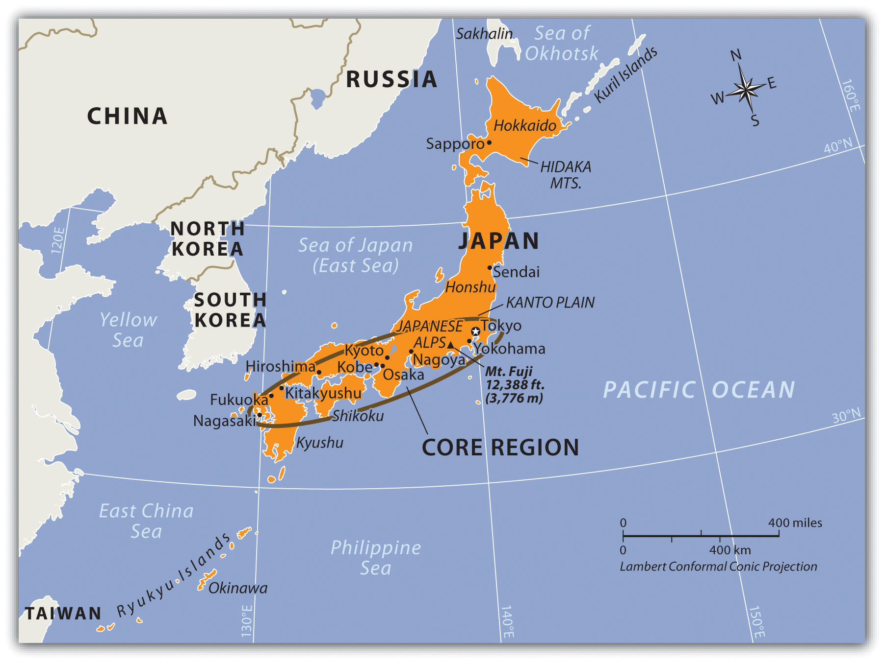Cities like Mexico City, São Paulo, and Bombay, which have vast slum communities, each claims to be the world’s largest city but lacks firm census data to verify its population. The largest metropolitan urban area in the world that can be verified is Tokyo, with a population of 26.7 million. The Tokyo metropolitan area is located in an extensive agricultural region called the Kanto Plain and includes the conurbation of Tokyo, Yokohama, and Kawasaki. The second-largest urban area in Japan is located in the Kansai District, and includes the cities of Kobe, Osaka, and Kyoto. Japan is a mountainous region, and most of its large cities are located in low-lying areas along the coast. Most of the population (67 percent) lives in urban areas such as Japan’s core area, an urbanized region from Tokyo to Nagasaki. The 2010 population of Japan was listed at about 126 million, less than half the size of the United States. It is ironic that the world’s largest metropolitan area is built on one of the worst places imaginable to build a city. Tokyo is located where three tectonic plates meet: the Eurasian Plate, the Philippine Plate, and the Pacific Plate. Earthquakes result when these plates shift, leading to possibly extensive damage and destruction. In 1923, a large earthquake struck the Tokyo area and killed an estimated 143,000 people. In 1995, an earthquake near Kobe killed about 5,500 people and injured another 26,000.
Figure 10.26 Expanse of the Metropolitan Area of Tokyo, with Mt. Fuji in the Background
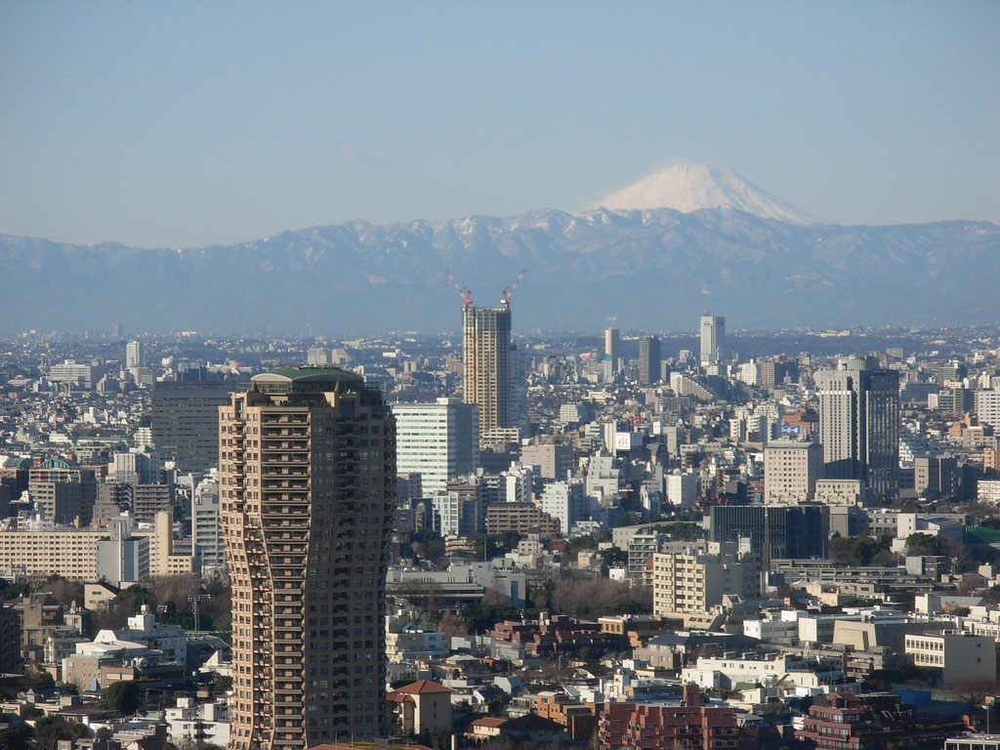Source: Photo courtesy of paper balloon, http://www.flickr.com/photos/bonjourmeeshell/3201391144.
In March 2011, a magnitude 9.0 earthquake struck forty-three miles off the eastern coast of northern Japan. The earthquake itself caused extensive damage to the island of Honshu. A shockwave after the earthquake created a tsunami more than 130 feet high that crashed into the eastern coast of Japan causing enormous damage to infrastructure and loss of life. Hundreds of aftershocks were recorded; at least three registered over 7.0 in magnitude. This is the strongest earthquake to ever hit Japan in recorded history. It resulted in more than 15,500 deaths and wreaked serious damage across Japan in the value of billions of dollars. Thousands of additional people remain missing. Nuclear power plants along the coast were hit hard by the tsunami, which knocked out their cooling systems and resulted in the meltdown of at least three reactors. The nuclear meltdowns created explosions that released a sizeable quantity of nuclear material into the atmosphere. This is considered the worst nuclear accident since the 1986 reactor meltdown at the Soviet plant at Chernobyl, located north of Kiev in present-day Ukraine. The next big earthquake could happen at any time, since Japan is located in an active tectonic plate zone.
The country of Japan is an interesting study in isolation geography and economic development. For centuries, shogun lords and samurai warriors ruled Japan, and Japan’s society was highly organized and structured. Urban centers were well planned, and skilled artisans developed methods of creating high-grade metal products. While agriculture was always important, Japan always existed as a semiurban community because the mountainous terrain forced most of the population to live along the country’s coasts. Without a large rural population to begin with, Japan never really experienced the rural-to-urban shift common in the rest of the world. Coastal fishing, always a prominent economic activity, remains so today. The capital city of Tokyo was formerly called Edo and was a major city even before the colonial era. Japan developed its own unique type of urbanized cultural heritage.
Encounters with European colonial ships prompted Japan to industrialize. For the most part, the Japanese kept the Europeans out and only traded with select ships that were allowed to approach the shores. The fact that European ships were there at all was enough to convince the Japanese to evaluate their position in the world. During the colonial era, Britain was the most avid colonizer with the largest and best-equipped navy on the high seas. Britain colonized parts of the Americas, the Middle East, Africa, South Asia, and Australia and was advancing in East Asia when they encountered the Japanese. Both Japan and Great Britain are island countries. Japan reasoned that if Great Britain could become so powerful, they should also have the potential to become powerful. Japan encompassed a number of islands and had more land area than Britain, but Japan did not have the coal and iron ore reserves that Britain had.
Around 1868, a group of reformers worked to bring about a change in direction for Japan. Named after the emperor, the movement was called the Meiji RestorationThe return of enlightened rule, starting in 1868 when modernizers took control of Japan. (the return of enlightened rule). Japanese modernizers studied the British pattern of development. The Japanese reformers were advised by the British about how to organize their industries and how to lay out transportation and delivery systems. Today, the British influence in Japan is easily seen in that both Japanese and British drivers drive on the left side of the road. The modernizers realized that to compete on the high seas in the world community they had to move beyond samurai swords and wooden ships. Iron ore and coal would have to become the goods to fuel their own industrial revolution. Labor and resources were valuable elements of early industrialization in all areas of the world, including Asia.
Figure 10.27
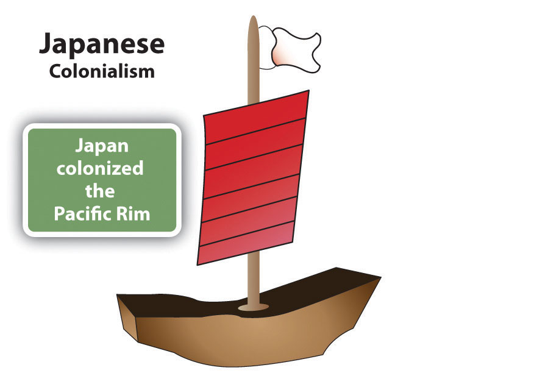Japan was a major colonial power in the Asian Pacific Rim. Japan colonized parts of Russia, China, Taiwan, Philippines, Southeast Asia, and Korea.
Japan began to industrialize and build its economic and military power by first utilizing the few resources found in Japan. Since it was already semiurban and had an organized social order with skilled artisan traditions, the road to industrialization moved quickly. Japan needed raw materials and expanded to take over the island of Formosa (Taiwan) and the Korean Peninsula in the late nineteenth and early twentieth centuries. Japan was on its way to becoming a colonial power in its own right. They expanded to take control of the southern part of Sakhalin Island from Russia and part of Manchuria (Northeast China) from the Chinese. Japanese industries grew quickly as they put the local people they subjugated to work and extracted the raw materials they needed from their newly taken colonies.
Figure 10.28
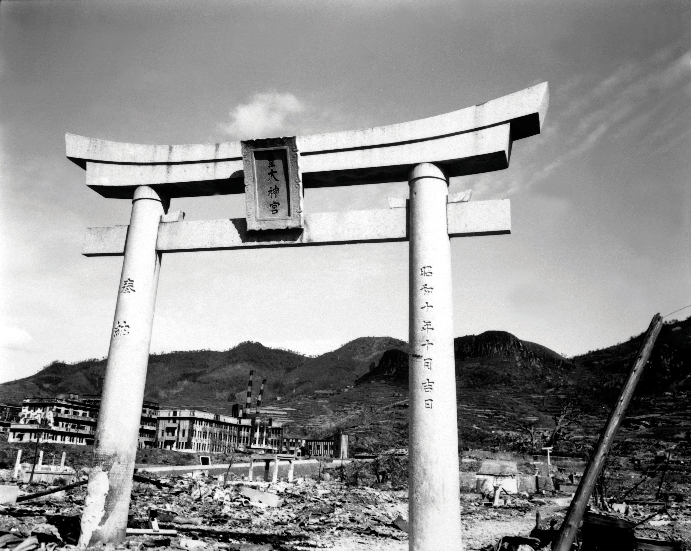This photo, taken after the atomic bomb blast of World War II in 1945, illustrates all that was left standing of a Shinto shrine in Nagasaki.
Source: Photo courtesy of the US Marine Corps, taken by Lt. R.J. Battersby.
The three-way split in China revealed that the Japanese colonizers were a major force in China even after the other European powers had halted their colonial activities. Japan’s relative location as an independent island country provided both quick access to their neighbors and also protection from them. By World War II, Japan’s economic and military power had expanded until they were dominating Asia’s Pacific Rim community. The Japanese military believed that they could invade the western coast of North America and eventually take control of the entire United States. Their attack on Pearl Harbor, Hawaii, in 1941, was meant to be only a beginning. History has recorded the outcome. The United States rallied its people and resources to fight against the Japanese in World War II. The Soviet Union also turned to fight the Japanese empire. The end came after atomic bombs, one each, were dropped by the United States on the Japanese cities of Hiroshima and Nagasaki. The terms of Japan’s surrender in 1945 stipulated that Japan had to give up claims on the Russian islands, Korea, Taiwan, China, and all the other places that they had previously controlled. Japan also lost the Kurile Islands—off its northern shores—to the Soviet Union. The islands have never been returned. Japan offered Russia an enormous amount of cash for them but the matter remains unresolved. The Kurile Island chain continues to be controlled by Russia. Japan also agreed not to have a military for offensive purposes. Japan was decimated during World War II, its infrastructure and economy destroyed.
Since 1945, Japan has risen to become Asia’s economic superpower and the economic center of one of the three core areas of the world. Japanese manufacturing has set a standard for global production. For example, think of all the automobiles that are Japanese products: Toyota, Honda, Mitsubishi, Subaru, Nissan, Isuzu, Mazda, and Suzuki. How many Russian, Brazilian, Chinese, or Indonesian autos are sold in the United States? The term “economic tiger” is used in Asia to indicate an entity with an aggressive and fast-growing economy. Japan has surpassed this benchmark and is called the economic dragonEconomic superpower in Asia—often used to refer to Japan. of Asia. The four economic tigers competing with Japan are Singapore, Hong Kong, Taiwan, and South Korea. Japan came back from total devastation in 1945 to become a world economic superpower.
Japan’s recovery in the last half of the century was remarkable. If an island nation like Japan could accomplish this rapid growth in its economy, why couldn’t other similar-sized countries accomplish the same level of growth? What was it that caused the Japanese people to not only recover so quickly but rise above the world’s standard to excel in their economic endeavors? The answer could be related to the fact that Japan already had an industrialized and urbanized society before the war. The United States did help rebuild some of Japan’s infrastructure that had been destroyed during World War II—things like ports and transportation systems to help bring aid and provide for humanitarian support. However, the Japanese people were able to not only recover from the devastation of World War II but rise to the level of an economic superpower to compete with the United States. Japan used internal organization and strong centripetal dynamics to create a highly functional and cohesive society that focused its drive and fortitude on creating a manufacturing sector that catapulted the country’s economy from devastation to financial success.
Figure 10.29 Timeline of Japanese Development

The same dynamics can be applied to Germany after World War II. Germany was completely destroyed by the war. The Allied powers decimated Germany’s infrastructure and resources. Today, Germany is the strongest economy in all of Europe. Part of the reason Germany came back to become so economically successful was its industrialized and urbanized society. Germany also was able to access resources. Again, think of all the automobiles that are German products: Mercedes, Volkswagen, Porsche, BMW, and Audi. The pattern of economic growth was similar for Germany and Japan. The loss of colonies after World War II prompted Japan to look elsewhere for its raw materials. Extensive networks of trade were developed to provide the necessary materials for the rapidly growing manufacturing sector. The urbanized region around Tokyo, including the cities of Yokohama and Kawasaki, swelled to accommodate the growth of industry. Japan’s coastal interior has a number of large cities and urban areas that rapidly increased with the growing manufacturing sector.
The basis for Japan’s technological and economic development may be related to its geographic location and cultural development. Japan’s pattern of economic development has similarities to the patterns of other Asian entities that have created thriving economic conditions. Hong Kong and Taiwan are both small islands with few natural resources, yet they have become economic tigers. Taiwan exports computer products to the United States, but Russia, with all its natural resources, millions of people, and large land area, does not. Explaining how or why countries develop at different rates can be complex, because there may be many interrelated explanations or reasons. One element might be centripetal cultural forces that hold a country together and drive it forward. The ability to manage labor and resources would be another part of the economic situation. The theory of how countries gain wealth may shed some light on this issue. Japan used manufacturing as a major means of gaining wealth from value-added profits. This is the same method the Asian economic tigers also developed their economies. Japan developed itself into a core economic country that took advantage of the peripheral countries for labor and resources during the colonial era. Japan took advantage of every opportunity that presented itself to become a world manufacturing center.
Japan is a homogeneous society. In 2010, all but 1 percent of the population was ethnically Japanese. Japan resembles a nation-state, where people of a common heritage and aspirations hold to a unified government. This provides a strong centripetal force that unites the people under one culture and one language. However, religious allegiances in Japan vary, and there are a good number of people who indicate nonreligious ideologies. ShintoismEthnic religion that is indigenous to Japan. and Buddhism are the main religious traditions. Shintoism includes a veneration of ancestors and the divine forces of nature. There is no one single written text for Shintoism; the religion is a loosely knit set of concepts based on morality, attitude, sensibility, and right practice. It is possible for a Shinto priest to conduct a wedding for a couple, whereas the funeral (hopefully taking place much later) for either of the spouses might be conducted by a Buddhist priest. The Buddhism that is practiced in Japan is more meditative in nature than mystical.
Modernization has brought new opportunities and problems for the Japanese people. With a highly urban and industrial society, personal incomes in Japan are high and family size is quite low, at about 1.2 children. The replacement level for a given population is about 2.1 children, which means Japan has a declining population. The population is aging and there are not enough young people to take entry-level jobs. The family has been at the center of Japanese tradition, and the elderly have been venerated and honored. As the country has become more economically developed, higher incomes for young people have prompted a shift toward convenience and consumer amenities. Consumer goods are available, but all the oil and about 60 percent of the food products have to be imported. During the off season, fruit, for example, is expensive. Beef is at a premium price, so fish is a staple source of protein. Income levels are high, but the cost of living in places like Tokyo is also quite high.
Japan is facing a labor shortage for many low-level service jobs that had traditionally been held by young people entering the workforce. Japan is an island country that has prided itself in being 99 percent Japanese. Countries in stage 5 of the index of economic development usually enter a negative population growth pattern. According to population statistics, Japan is at the start of a serious population decline, with a negative population growth pattern. While Western Europe and the United States also have a declining percentage of young people, in those countries the declining youth cohort has been replaced by an elevated level of immigration, both legal and illegal. Culturally, this is not an attractive option for Japan, but they are forced to address the labor shortage in any way they can. Their economy will depend on the ability to acquire cheap labor and resources to compete in the global marketplace.
Figure 10.30
What cultural centripetal forces have been holding Japan together?
As the economic dragon of Asia, Japan has had an enormous economic impact on the East Asian Community (EAC). The shortage of cheap labor has forced Japan to look elsewhere for new manufacturing ventures. China is an attractive country in this respect because of its substantial population and low standard of living for many of its citizens. Japan is looking to take advantage of its geographical location to establish a more positive trade situation with its Asian neighbors. The dynamics of its economy are uniquely similar to that of the United States and Europe. All three core economic areas are competing for inexpensive labor and resources to fuel their economies. China has been a major destination for manufacturing production because of its low labor costs and attractive financial incentives. If you recall, during World War II China and Japan were locked in a bitter war that caused harsh animosities to take root against each other. The two countries have not historically been friendly toward each other. Japan’s history as a colonizer has caused serious cultural attitudes against it from its Asian neighbors. Nevertheless, economics usually drive politics, and Japan wields enormous economic power. Japan now engages in trade with China and continues to be a core economic country in the global economy.
The Korean Peninsula juts out into the Pacific Rim from northwestern Asia. The peninsula is bound by the Sea of Japan (the East Sea) and the Yellow Sea. North and South Korea share the peninsula. These countries have been separated by the Korean demilitarized zone (DMZ) since 1953. To the west and north is China and to the far north along the coast is Russia. Korea is separated from China by the Yellow Sea and the Yalu and Tumen Rivers to the north. The Yalu and Tumen rivers form the actual border between North Korea and China. Japan is located just east of the Korean Peninsula across the Korea Strait. The Korean Peninsula is now split between South Korea and North Korea. The capital city of North Korea is Pyongyang, and Seoul is the capital of South Korea.
The topography of the Korean Peninsula is mountainous with arable or cultivable land in high demand. Approximately 70 percent of the Korean Peninsula is mountainous. The bedrock is predominantly composed of volcanic and granitic rocks that have been severely modified by glacial processes over the past twenty-five thousand years. The highest peak in North Korea rises more than nine thousand feet. The Korean Peninsula can be thought of as four general areas:
Off the southern and western coasts of the Korean Peninsula are about three thousand small and mostly uninhabited islands, all within the territory of South Korea. South Korea’s largest island has an area of 712 square miles. It is the highest point of land in South Korea, at 6,398 feet above sea level.
North and South Korea have very different, yet related, environmental issues, primarily related to the degree of industrialization. With a low level of industrialism, North Korea has severe issues of water pollution as well as deforestation and related soil erosion and degradation. Other issues in North Korea include inadequate supplies of clean drinking water and many waterborne diseases. South Korea has water pollution associated with sewage discharge and industrial effluent from its many industrial centers. Air pollution is severe at times in the larger cities, which also contributes to higher levels of acid rain.
The physical size in square miles of North Korea or South Korea is similar to the physical area of the US state of Kentucky. North Korea is slightly larger, and South Korea is slightly smaller. For centuries, Korea was a unified kingdom that was often invaded by outsiders. After the fall of the Chinese Qing (Manchu) Dynasty, the Japanese took control of the Korean Peninsula (1910) and controlled it as a colony. Japanese colonial rule ended in 1945 when the United States defeated Japan, forcing it to give up its colonial possessions. The structure of modern Korea is a result of the ending of World War II.
Figure 10.31 The Korean Peninsula between the North and the South
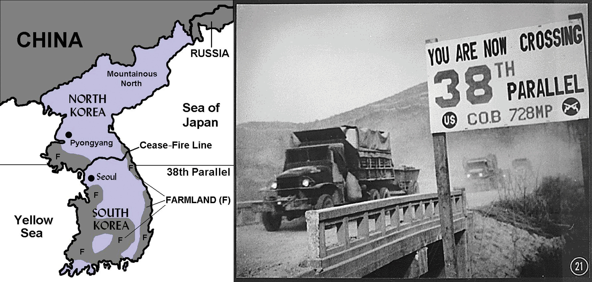The thirty-eighth parallel cuts across the peninsula in the area of the DMZ farmland. The thirty-eighth parallel on or near the DMZ is the Cease-Fire Line between North and South Korea (right).
Sources: Photo courtesy of US Information Agency, http://research.archives.gov/accesswebapp/faces/showDetail?file=Item_541822.xml&loc=108.
The conclusion of World War II was a critical period for the Korean Peninsula. The United States and the Soviet Union both fought against the Japanese in Korea. When the war was over, the Soviet Union took administrative control of the peninsula north of the thirty-eighth parallel, and the United States established administrative control over the area south of the thirty-eighth parallel. The United States and the Soviet Union divided Korea approximately in half and eventually established governments in their respective regions that were sympathetic to each nation’s own ideology. The Soviet Union administered the northern portion; the United States administered the southern region. Politics deeply affected each of the regions. Communism dominated North Korea and capitalism dominated South Korea. In 1950, with aid from China and the Soviet Union, the Communists from the north invaded the south. After bitter fighting, a peace agreement was reached in 1953 to officially divide the Korean Peninsula near the thirty-eighth parallel. Korea remains divided to this day. The United States has thousands of soldiers stationed along the Cease-Fire LineDemilitarized zone dividing North and South Korea. (or DMZ), which is the most heavily guarded border in the world.
The government of North Korea (Democratic People’s Republic of Korea, or DPRK) was formed with the leadership of Communist dictator Kim Il Sung, who shaped his country with a mix of Soviet and Chinese authoritarian rule. Having few personal freedoms, the people worked hard to rebuild a state. Using the threat of a US military invasion as a means of rallying his people, Kim Il Sung built up a military of more than one million soldiers, one of the largest in the world. People could not travel in or out of the country without strict regulation. North Korea existed without much notice until the 1990s, when things suddenly changed.
When the Soviet Union fell in 1991, North Korea lost a valued source of financial support and oil. Without fuel and funding, many of the factories closed. Unemployment rates rose significantly. Meanwhile, China adopted a more open posture and began to increase its level of trade with the West. The result was that China began to lose interest in propping up North Korea politically. North Korea was facing serious problems. Massive food shortages caused famine and starvation. Thousands of people died. Kim Il Sung died in 1994 and the country lost their “Great Leader.” He had ruled the country since World War II and in the end was deified as a god to be worshiped by the people.
Figure 10.32
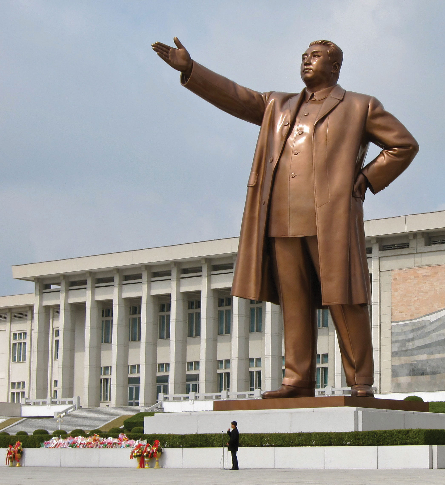This giant statue of North Korea’s “Great Leader” Kim Il Sung stands in the capital city of Pyongyang and is called the Mansudae Grand Monument. This mammoth bronze statue was built in 1972 to celebrate the Great Leader’s sixtieth birthday.
Source: Photo courtesy of John Pavelka, http://www.flickr.com/photos/28705377@N04/4610364189.
The government dictatorship continued as the Great Leader’s son, Kim Jong Il, took over the leadership role. Kim Jong Il, known as the “Dear Leader,” took repression of his people to new levels. Televisions and radios sold in North Korea can only receive government-controlled frequencies. Cell phones and the Internet are banned. The government takes a hard line against dissenters. If you are caught speaking against the state or taking any action to support dissent, you can be arrested, fined, placed in a prison camp, or executed. People are not allowed to leave or enter the country without government approval. Only a couple hundred tourists are allowed into the country per year and are closely escorted.
Kim Jong Il has taken hard measures to stay in power and to avoid yielding to the capitalist frenzy of corporate colonialism. He has nuclear weapon capability and has used his military weapons production as a bargaining chip against the United States and other world powers. North Korea has demonized the United States as the ultimate threat and has used state-funded propaganda to indoctrinate its people. North Korea’s government continually tells its people that the United States will invade at any minute and to be prepared for the worst. Propaganda has been used to create and enforce military, economic, and political policies for an ideology that supports the unification of all of Korea under Communist control.
North Korea is mainly mountainous; there is little quality farmland. While only 2 percent of the land is in permanent crops, about a third of the population works in agriculture. The best farmland in North Korea is located south of the capital city of Pyongyang. The capital is a restricted area where only the most loyal to the state can live. There is a serious shortage of goods and services. Electricity is not available on a dependable basis. Massive international food aid has sustained the people of North Korea. Outside food aid is accepted even though Kim Jong Il has continued a policy of self-reliance and self-sufficiency called JuchePolicy of self-sufficiency and self-reliance in North Korea.. Juche is designed to keep Korea from becoming dependent on the outside. The policy of Juche has been quite effective in isolating the people of North Korea and keeping dictator Kim Jong Il in power. The policy of Juche also holds back the wave of corporate capitalism that seeks to exploit labor and resources in global markets for economic profit.
Figure 10.33
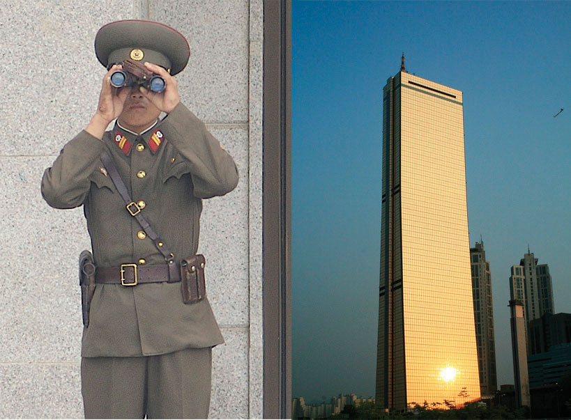A North Korean soldier looks across the DMZ in the Joint Security Area (left). The modern “63 Building” in Seoul, South Korea, stands as witness to the prosperity and advancements in the South Korean economy (right).
Sources: Photo on left courtesy of Expert Infantry, http://www.flickr.com/photos/expertinfantry/5439135543. Photo on right courtesy of PhareannaH[berhabuk], http://www.flickr.com/photos/phareannah/2520374354.
One way that North Koreans are finding out about the outside world is through smuggled-in cell phones and VHS videotapes from South Korea. Popular VHS productions include South Korean soap operas, because of the common heritage, language, and ethnicity. The North Korean government has attempted to crack down on smuggled videotapes by going from home to home. Electricity is turned off before entering the home. Once the electricity is turned off, videotapes cannot be removed from the video player. The government agents then recover the videotape. Citizens found with smuggled videotapes are punished with steep fines or imprisonment. Desperate North Koreans have escaped across the border into northern China, where thousands of refugees have sought out better opportunities for their future. It is ironic to think that Communist China, with historically few human rights, would be a place where people would seek refuge, but China’s economy is growing and North Korea’s economy is stagnant, which creates strong push-pull forces on migration.
In 1993, South Korea became a fully fledged democracy with its first democratically elected president. Seoul is the capital city and is home to almost ten million people. Seoul is located just south of the Cease-Fire Line, also known as the DMZ, which is referred to in general terms as the thirty-eighth parallel, even though it does not follow it exactly. The United States has many military installations in this area.
South Korea manufactures automobiles, electronic goods, and textiles that are sold around the world. South Korea is a democracy that has used state capitalismWhen the state owns or controls the means of production but allows the free markets to determine supply and demand. to develop its economy. After the World War II era, South Korea was ruled by a military government that implemented land reform and received external economic aid. Large agricultural estates were broken up and redistributed to the people. Agricultural production increased to meet the demands of the population. South Korea has much more agricultural production than North Korea and is therefore in providing food for the high population density. A once-modest manufacturing sector has grown to become a major production center for export trade.
The fifty million people who live in South Korea have a much higher standard of living than the residents of North Korea. Personal income in the north is barely equivalent to a few dollars per day, while personal income in the south is similar to that of Western countries. The economic growth of the south was a result of state-controlled capitalism, rather than free-enterprise capitalism. The state has controlled or owned most of the industrial operations and sold its products in the global marketplace. Giant corporations, which forced industrialization along the coastal region, have promoted South Korea as the world’s leading shipbuilding nation. South Korean corporations include Daewoo, Samsung, Kia Motors, Hyundai, and the Orion Group. As an economic tiger, South Korea continues to reform its economic system to adapt to global economic conditions.
South Korea has announced plans to conduct a comprehensive overhaul of its energy and transportation networks. Government funding will augment efforts to create more green-based initiatives. Part of this effort will focus on lower energy dependency with environmentally friendly energy developments such as wind, solar, bike lanes, and new lighting technologies. High-speed rail service and increased capacity in electronic transmissions lines are planned as part of a next generation of energy-efficient technologies that will increase economic efficiency. These policies have been enacted to update South Korea’s economy and create new products for manufacturing export.
Buddhism was introduced into the Korean Peninsula, as were many other aspects of Chinese culture that had significant effects on the Korean heritage. Buddhism has been a prominent religion in Korea for centuries. The teachings of Confucius are also widely regarded. About 30 percent of the population claims Christianity as their religious background; about 20 percent of the Christians are Protestant and 10 percent are Catholic. This is the highest Christian percentage of any Asian country. Up to half of the population makes no claims or professions of faith in any organized religion. Before 1948, Pyongyang was a notable Christian center. At that time, approximately three hundred thousand people identified as Christian. After the establishment of a Communist government in North Korea, many of the Christians fled to South Korea to avoid persecution.
What if North Korea and South Korea would become unified again? In the field of geography, there is a concept of regional complementarityWhen two areas can exchange goods or resources to satisfy both sides’ demands and both can benefit., which exists when two separate regions possess qualities that would work to complement each if unified into one unit. North and South Korea are the classic illustration of regional complementarity. The North is mountainous and has access to minerals, coal, iron ore, and nitrates (fertilizers) that are needed in the South for industrialization and food production. The South has the most farmland and can produce large harvests of rice and other food crops. The South has industrial technology and capital needed for development in the North. If and when these two countries are reunited, they could work well as an economic unit.
Figure 10.34 Reunification Buddha in South Korea, Erected to Signify the Unity of the Korean People
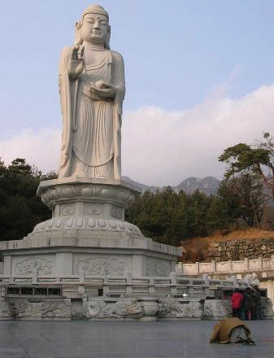Source: Photo used by permission of Jane Elizabeth Keeler.
The harder question is how and under what circumstances the two Koreas could ever come to terms of unification. What about the thirty-five to forty thousand US soldiers along the DMZ? What type of government would the unified Korea have? There are many young people in South Korea that would like to see the US military leave Korea and the two sides united. The generation of soldiers that survived the Korean War in the 1950s understands the bitterness and difficulties caused by the division. This segment of the population is highly supportive of maintaining the presence of the US military on the border with North Korea. Unification is not likely to take place until this generation either passes away or comes to terms with unification. The brutal dictatorship of Kim Jong Il, with his claimed nuclear capabilities, has been a main barrier to unification. This is a political division, not technically a cultural division, even though the societies are quite different at the present time. The geography of this situation is similar to that of East and West Germany after World War II and during the Cold War. Korea may have different qualities from Germany, but unification may be possible under certain conditions, foremost being different leadership in the north.
Identify the following key places on a map: